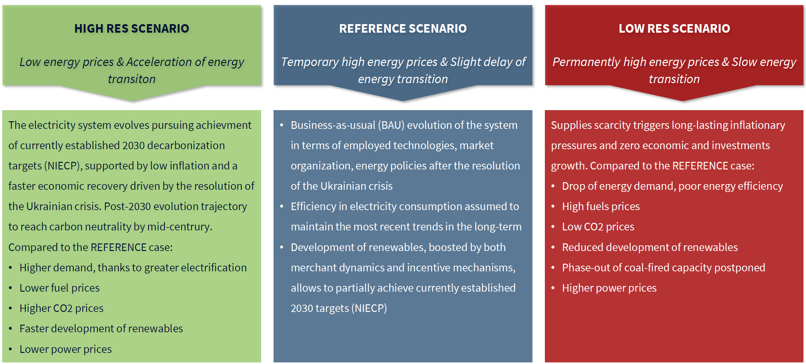
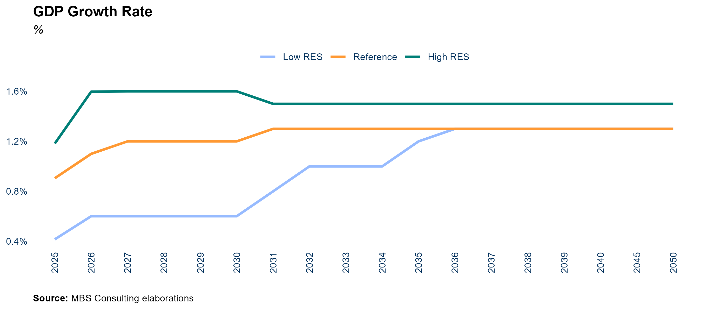
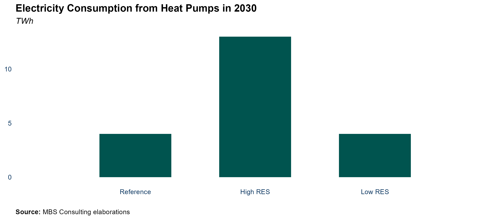
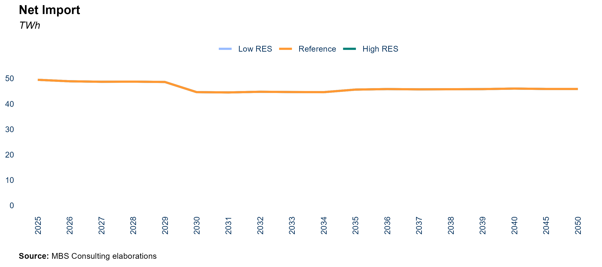
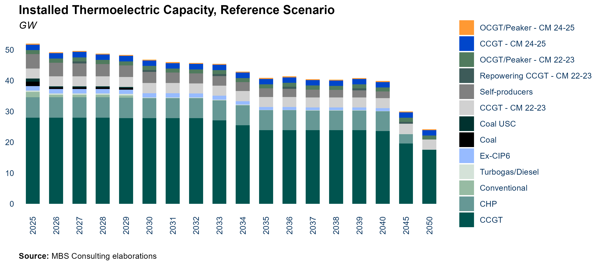
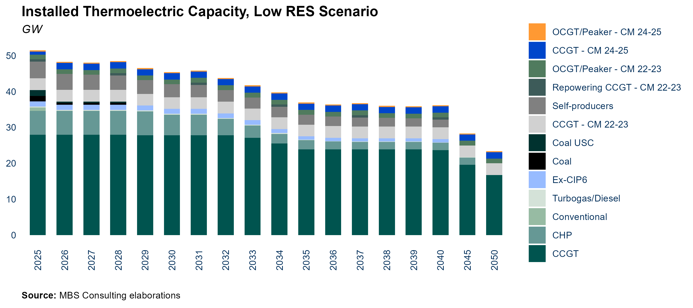
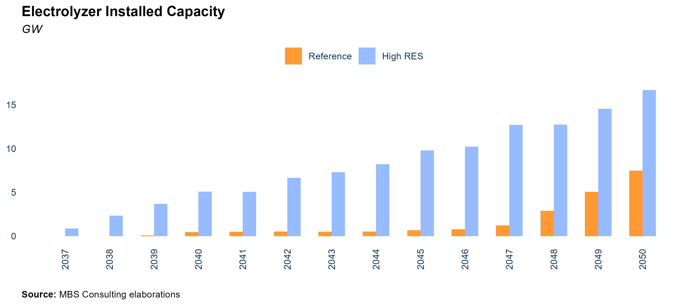
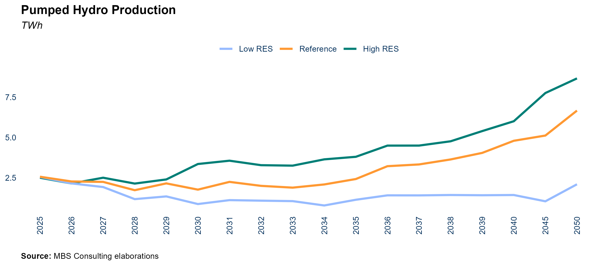

NET POWER (GW) | Reference | Low | High | |||||||||
|---|---|---|---|---|---|---|---|---|---|---|---|---|
2025 | 2030 | 2040 | 2050 | 2025 | 2030 | 2040 | 2050 | 2025 | 2030 | 2040 | 2050 | |
CCGTs | 28,0 | 27,8 | 23,7 | 17,6 | 28,0 | 27,8 | 23,7 | 16,7 | 28,0 | 27,8 | 23,7 | 17,6 |
Coal | 1,5 | 0,5 | 0,0 | 0,0 | 1,5 | 0,0 | 0,0 | 0,0 | 1,5 | 0,8 | 0,0 | 0,0 |
New CCGTs | 7,3 | 7,3 | 7,3 | 7,3 | 7,3 | 7,3 | 7,3 | 7,3 | 7,3 | 7,3 | 7,3 | 7,3 |
Electrochemical BESS - Power Intensive | 1,8 | 2,0 | 0,0 | 0,0 | 7,5 | 3,4 | 0,0 | 0,0 | 0,9 | 1,0 | 0,0 | 0,0 |
Electrochemical BESS - Energy Intensive | 2,7 | 13,1 | 29,4 | 40,8 | 4,0 | 17,0 | 35,6 | 54,2 | 2,0 | 6,3 | 10,4 | 18,4 |
Hydro | 19,0 | 19,3 | 20,0 | 20,6 | 19,0 | 19,3 | 20,0 | 20,6 | 19,0 | 19,3 | 20,0 | 20,6 |
Wind | 13,8 | 16,3 | 27,4 | 40,1 | 14,8 | 21,6 | 35,4 | 46,4 | 13,3 | 14,3 | 19,3 | 30,1 |
Geothermal | 0,8 | 0,8 | 0,8 | 0,8 | 0,8 | 0,8 | 0,8 | 0,8 | 0,8 | 0,8 | 0,8 | 0,8 |
Biomass | 3,9 | 3,9 | 3,9 | 3,9 | 3,9 | 3,9 | 3,9 | 3,9 | 3,9 | 3,9 | 3,9 | 3,9 |
Solar | 38,1 | 50,9 | 79,6 | 114,1 | 38,1 | 63,0 | 87,0 | 122,1 | 38,1 | 44,3 | 58,8 | 84,9 |
Italian Electricity Market Scenario
December 2024 Update
1 Frame of Reference
REF-E scenarios over the time horizon 2024-2050 (with projections up to 2060) are elaborated by MBS Consulting experts on the base of proprietary suites and market knowledge. Econometric and structural models, as well as our expert sensitiveness, detailed knowledge of regulation, and accurate monitoring of market outcomes underlie our elaborations.
Gas and electricity forecasts consider the diverse geopolitical and economic hypothesis deriving from the regulatory, financial and fundamentals adjustments to the disruption generated both from the pandemic and the Ukrainian war, which are seen as key determinants of the future equilibrium of the energy markets.
Current scenario update incorporates an evolution of climate variables in line with the historical average trend.
In this perspective, we defined three scenarios:
The High Case scenario is characterized by permanently high fuels and power prices amid negative or zero economic growth depressing investments and weighing on the energy transition process.
In the Reference scenario, is characterized by the energy transition process progress leading to a diversification of energy sources supported by the existing policies. This, combined with efficiency maintains the energy market on a transformation path. The economic growth slowly recovers over the next two years.
The Low Case scenario would materialize in the event of favorable weather conditions and a fast energy transition, supported by low inflation and a faster economic recovery, reducing power and fossil fuels demand over the next few years. This would limit energy prices upside potential and then fuel a downward acceleration.

1.1 The Outlook for Italy’s Energy Market Amid Regulatory Changes, Geopolitical Tensions, and RES Dynamics
Key Insights
Short-term Italian GDP growth remains modest, primarily driven by a gradual recovery in industrial production, influenced by wage trends and anticipated adjustments in monetary policy. In the Reference scenario, GDP growth is projected to reach 0.4% year-on-year in 2024, followed by a more robust increase of 1% in 2025, bolstered by expected improvements in financial conditions. A lackluster industrial sector and subdued investment are expected to hinder performance in 2024. However, a relaxation of monetary policy in the latter half of the year, coupled with favorable wage dynamics, is anticipated to invigorate growth in 2025. In the High case scenario, characterized by ongoing inflationary pressures, GDP may contract by 0.1% in 2024, followed by a modest recovery of 0.3% in 2025. In contrast, the Low case scenario—defined by a quicker disinflation and a resurgence in investments—anticipates GDP growth of 1.2% in 2024 and 1.6% in 2025. Long-term growth will hinge on several factors, including the pace of disinflation, the enhancement of financial conditions, and the effective execution of the National Recovery and Resilience Plan (NRRP). Both the Reference and Low scenarios posit that economic growth will thrive on successful NRRP implementation, a global economic recovery, and expedited green transition reforms. Conversely, in the High scenario, fiscal pressures and delays in NRRP execution may impede growth, posing risks to progress in the green transition.
In the European context, following the challenging period for European energy markets between 2021 and 2023, the decarbonization of the electricity sector is now accelerating, with renewable energy sources leading the shift across major European markets. The first nine months of 2024 show electricity consumption stabilizing at 2023 levels, largely due to slow economic growth, reduced industrial production, delays in electrification—especially in Italy—and widespread adoption of energy-saving measures. At the same time, the share of renewables in the European energy mix has reached historic highs. In the first half of 2024, renewables accounted for over 60% of Germany’s electricity consumption, driven by favorable wind conditions and PV expansion, while Spain benefited from increased hydroelectric output and new PV capacity. Switzerland, aiming to reduce nuclear dependency, passed legislation to boost renewables and support electricity exports to Italy, whereas France remains reliant on nuclear power, which still supplies about 70% of its electricity.
As far as Italy is concerned, the notable 2023 surge in renewables (with an increase of 5.8 GW compared to the 1.5 GW/year averaged over the last five years) continues into 2024, marking further progress on the path to net zero. In the first eight months of 2024, solar capacity grew by 4.3 GW, with a monthly growth rate consistent with 2023 and a geographical distribution of new capacity largely following historical patterns: Lazio led in installations, followed by Piedmont, Lombardy, Sicily, and Sardinia. Wind capacity expanded by just under 500 MW in 2024, predominantly in the Central and Southern regions, in line with the post-2021 trajectory (we recall that 2021 corresponds to the year of the implementation of the “Semplificazioni” Decree). The positive impact of previous regulatory simplifications in the permitting process is evident in the advancement of authorized projects: between July and September 2024, 2.3 GW of solar and wind projects were approved, predominantly solar, with Puglia, Sicily, and Emilia Romagna at the forefront. This data is slightly higher than the permitting trajectory for the first two quarters of 2024 and the last two quarters of 2023, confirming the positive trajectory. PAS procedures, whose application scope has been broadened by the NECP of 2023, accounted for half of the approved capacity of the last trimester.
The latest draft of the NECP 2024 confirms Italy’s ambitious decarbonization goals for the power sector, aiming for a 63% renewable share by 2030. The regulatory landscape, however, continues to be riddled with medium- to long-term uncertainties. The “Aree Idonee” Decree, which was anticipated to expedite the authorization process, has instead proven excessively discretional as regional authorities impose strict limitations on designated suitable areas, undermining the future penetration of RES. In a comparable vein, the “Testo Unico sulle Rinnovabili” exacerbates the complexity of the regulatory framework by imposing new qualifications rather than effectively streamlining the permitting process. Notably, landscape compatibility assessments have become a requirement for specific operations that once fell under “Edilizia libera” (permitted development). Furthermore, the evolutions regarding the FerX incentive scheme amplify the uncertainty associated with the commissioning of RES plants. As the final version of the FerX remains pending, the MASE has recently prepared a draft temporary decree, “FerX Transitorio”, aimed at launching the incentive system as quickly as possible. This Decree establishes a support scheme for renewable sources that is valid only until December 31, 2025. The most recent update allocates a quota of 3 GW specifically for RES plants with direct access to the incentive, alongside 14.65 GW—comprised of 10 GW for solar and 4 GW for wind—for plants participating in the public auction regime. This quota, which has already been lowered in response to the ARERA opinion on the Decree, signifies a notable reduction compared to the contingent set by the definitive FER X. As for the rest, the scheme retains most of the stipulations found in the draft of the definitive FER X, including the exclusion from the auction participation for projects that initiated construction operations prior to the submission of the auction participation application. Such a stipulation may potentially hinder the short-term momentum of plant commissioning. However, the expected impact of the “FerX Transitorio” will likely depend on the timing of the auctions, which are currently projected to be delayed until 2025.
Overall, the outlook for renewable energy sources (RES) in Italy appears promising for the coming years, despite lingering uncertainties. The momentum gained in 2023, which has continued into early 2024, is expected to carry through to the latter part of 2024, albeit at a more gradual pace, stabilizing at around 2.5 GW annually (an average of 2 GW from solar and 0.5 GW from wind) during the 2025–2026 period. A more significant acceleration in RES installations is projected from 2027 onward, driven by the FERX initiative. However, under the Reference scenario, only 50 GW of solar and 16 GW of wind installed capacity are projected for 2030, which falls short of the PNIEC targets of 80 GW and 28 GW, respectively. This discrepancy is due to the current permitting pace, which falls short of the 9-10 GW per year needed to meet demand. Should there be a complete simplification of the authorization procedures, a more efficient permitting process could enable the installation of 63 GW of solar and 22 GW of wind by 2030 (Low Case scenario). The recent developments in renewable energy source (RES) regulations align with improved short-term conditions in the gas market and an increase in renewable electricity generation. This has contributed to a downward trend in power prices across Europe since early 2024, a trend that has recently been intensified by spikes in electricity demand. The IIIQ 2024 Market Report explores the long-term risks and opportunities that lie ahead. The analysis identifies potential pathways to decarbonization while addressing the disparities between expected market trends and national decarbonization objectives, underscoring the challenges that must be navigated in the future.
Gas prices have experienced a slight increase during the summer months due to heightened geopolitical tensions, approaching the average levels for the same period in 2023. However, given the current competition in LNG supplies, along with the status of European domestic gas reserves and demand, a significant rise in gas prices is deemed unlikely until the upcoming winter season, barring any further deterioration in geopolitical conditions. The extended period of low prices is delaying the construction of liquefaction capacity, which could create renewed supply-demand imbalances. Nevertheless, the potential for a new bullish cycle should not be discounted, particularly beginning in the winter of 2025-2026. From 2026 onward, LNG demand growth is projected to slow to below 5% annually, driven by an increase in renewable energy production and enhanced energy efficiency measures. A new wave of liquefaction capacity is expected to come online by 2026, primarily led by the United States and Qatar, which should significantly alleviate the risk of market shortages. While current geopolitical tensions have not yet influenced gas market dynamics in this scenario and are not reflected in pricing, they remain a critical risk factor that could disrupt short-term market equilibrium. The persistently low gas demand across Europe in 2023 has led to storage levels significantly surpassing historical averages, which has, in turn, contributed to a decline in gas prices. Without a resurgence in electricity demand to boost thermoelectric gas consumption, the anticipated demand for storage injections in 2024 is unlikely to have a substantial impact on gas prices in the coming months. The Italian gas price remains closely linked to the European hub, particularly the TTF. However, the temporary suspension of operations at the OLT facility has disrupted Italian gas imports, causing near-term projections to reflect greater discrepancies from the TTF.
In our Reference scenario, the yearly averages for both PSV and TTF in 2024 stay below 42 €/MWh, reflecting the effects of limited gas demand recovery, shift towards savings and efficiency reducing pressure on distribution networks. Additionally, subdued growth in the energy-intensive sector limits industrial demand, resulting in lower-than-average thermoelectric gas demand. Delays in the commissioning of the Ravenna FSRU have tempered expectations for a recovery in gas demand. The dynamics of the global LNG market continue to play a crucial role in amplifying price volatility, particularly during the winter months. In the Low scenario, a more accelerated energy transition and diminished global gas demand are projected to maintain prices around 30 €/MWh in 2024, with levels dipping at 20 €/MWh in 2025 and below 20 €/MWh by 2026. Conversely, the High scenario anticipates that economic stagnation, reduced investment, and geopolitical instability will push prices above 50 €/MWh by 2025. PSV is expected to align with the mid-term normalization of European gas prices towards 30 €/MWh by 2030, in the Reference scenario, reflecting a gradual re-balancing of global gas demand-supply dynamics amid the anticipated acceleration of the energy transition. In the very long-term PSV price should converge to an equilibrium of 25 €/MWh in the Reference scenario and 10 €/MWh in the Low case, while it should settle above 40 €/MWh in the High scenario.
The formalization of the ETS system reform underscores its essential role in advancing the decarbonization process. This introduction of new measures comes amid weakened macroeconomic fundamentals, a prolonged period of low demand, and a bearish trend in CO2 prices since the second quarter of 2023. Several factors are estimated to have contributed to this decline in demand, including reduced industrial production—particularly in energy-intensive sectors—higher energy costs from the previous year prompting increased savings, elevated inflation rates, and a restrictive monetary policy adversely affecting economic growth. In our Reference scenario, the average CO2 price for 2024 is projected to approach 67 €/ton, propelled by the gradual implementation of the ETS reform. The planned phase-out of free allowances for the aviation sector—accounting for 50% of total allowances by 2025—and the scheduled removal of 90 million permits from the market in 2024 are expected to drive allowance prices upward as supply diminishes. Furthermore, the gradual inclusion of the maritime transport sector starting in 2025 is anticipated to further elevate overall demand, with prices projected to reach 107 €/ton by 2030. Key concerns center around the limited demand recovery expected in the next few years due to sluggish economic growth. The Low case scenario envisions a rapid economic recovery alongside challenges in decarbonizing hard-to-abate sectors such as aviation and maritime transport. These dynamics could lead to a substantial increase in demand, pushing the CO2 price to exceed 130 €/ton before 2030. Conversely, if further demand disruptions occur due to high energy costs, reduced industrial output, and delays in implementing new regulations, the High case scenario may emerge, wherein ETS prices fail to rebound, remaining below 65 €/ton in the short term and under 75 €/ton until 2030. The effectiveness of the ETS system is crucial for achieving long-term emission reduction targets, with the CO2 price projected to exceed 120 €/ton in the Reference scenario by 2040, potentially rising to just under 150 €/ton in the Low scenario or nearing 90 €/ton in the High scenario.
In 2023, electricity consumption fell to 306 TWh, marking a 3% decline from 2022. However, a modest recovery in the macroeconomic outlook for 2024, coupled with increased electrification of end-use consumption, is projected to raise consumption to 312 TWh in the Reference scenario. In a more optimistic economic context, consumption could reach 315 TWh, as indicated in the Low case scenario. Conversely, a more pessimistic outlook, along with delays in the electrification of final uses, is anticipated to result in a consumption level of 310 TWh in the High scenario. In the coming years, supportive economic measures driven by the NRRP and the realization of electrification potential could create a divergence in forecasts, with consumption potentially ranging from 327 TWh in the High scenario to 358 TWh in the Low case by 2030. The Reference case anticipates a more contained efficiency trajectory and moderate economic growth, projecting electricity demand to reach 339 TWh by 2030. In the long term, a successful electrification trajectory combined with a stable economic outlook could drive consumption to 377 TWh by 2040 in the Low scenario. The Reference scenario anticipates a more moderate increase, projecting consumption at 364 TWh. Conversely, the structural delays reflected in the High scenario are expected to result in electricity demand of only 340 TWh. The overall contraction of electricity demand in European countries, coupled with a recovery in hydro generation following the severe drought of 2022 and the first half of 2023, alongside the resurgence of nuclear availability in France, has contributed to a 15% year-on-year increase in net import flows in 2023, reaching 53 TWh. During the first nine months of 2024, imports accounted for 16% of demand in that period, consistent with the same quota from 2023. In the coming years, persistently subdued electricity demand, combined with the growing installed capacity and generation of renewable energy sources (RES) across Europe, is expected to sustain steady imports to Italy, particularly from northern borders. The commissioning of the new Passio Resia interconnector, linking Austria and Italy with a capacity of 300 MW, will further enhance inflows from Austria. High electricity imports to Italy are also bolstered by the PUN, which remains stable well above other European electricity prices, especially those in France and Switzerland. Notably, the average spread between the Italian power price and those of neighboring countries has nearly doubled over the past five years. As we approach 2030, the consolidation of these dynamics—coupled with the expansion of RES capacity to meet projected increases in power demand—supports expectations of overgeneration across Europe, despite the gradual phase-out of coal-fired generation on the continent. This trend indicates that imports will continue to be a cost-effective option in the medium to long term, reinforcing projections of imports around 45 TWh even beyond 2030.
The grid expansion aligns with Terna’s 2023 Development Plan. In the Reference scenario, reinforcements are projected to be operational by the 2020s, with significant improvements to address zonal congestion expected to be completed in the 2030s, including the Tyrrhenian and Adriatic links, as well as the initial segments of the Hypergrid. In the Low scenario, a more rapid adoption of renewable energy would necessitate the implementation of these major projects even before 2030. Conversely, the slower transition seen in the High scenario would delay key investments until the mid-2030s.
By 2030, the Southern zone and the Islands are projected to experience significant risks of overgeneration and curtailment, underscoring the urgent need for a substantial increase in new electrochemical storage projects. The trajectory of storage capacity expansion is closely tied to the current eligible pipeline, the growth of renewable energy sources, and grid enhancement plans. While the anticipated expansion of RES capacity in the Reference scenario falls short of the targets established by the PNIEC, storage capacity projections are similarly expected to underperform, reaching approximately 15 GW by 2030. However, these dynamics may accelerate or decelerate significantly, heavily influenced by the evolution of RES permitting and deployment trends. In the Low scenario, we anticipate storage capacity could reach 20 GW, reflecting a more rapid growth in RES capacity. Long-term development of battery storage should capitalize on time-shifting applications within the day-ahead market. Investments in power-intensive electrochemical batteries could prove financially viable in the medium term, primarily generating revenue through participation in the balancing phase of the Ancillary Services Market and long-term capacity remuneration via specific projects. Investment in merchant energy-intensive storage batteries is expected to be attractive mainly in the long term, when time-shifting applications in the day-ahead market become economically sustainable due to increasing price volatility and instances of overgeneration. By 2040, our Reference scenario anticipates the development of up to 29 GW of energy-intensive batteries, with 35 GW projected in the Low scenario. The regulatory framework is undergoing significant changes, creating new opportunities for battery storage. The MACSE mechanism, designed for storage stand alone, offers a regulated remuneration model in which Terna pays a fixed fee (€/MWh/year) for capacity provision and allocates 20% of the revenues from balancing activities to support the storage development. In October, the MASE approved the rules that regulate this new mechanism. The auctions are expected to be scheduled in the first half of 2025, with at least six months before the definition of the auction perimeters and the updating of economic parameters.
The need to boost energy independence in the decarbonization process at European level has placed green hydrogen at the forefront of the European energy strategy (REPowerEU). It is expected to determine the allocation of substantial funding – way more than the amount currently earmarked – to accelerate the development of a European hydrogen supply chain, improving current cost perspectives of green solutions. But accelerating renewables development poses the risk of structural overgeneration if the development of BESS does not advance concurrently, especially in less interconnected regions and have a high intensity of renewables relative to demand, such as Sardinia and Sicily where economically viable opportunities for competitive green hydrogen consolidate starting from 2035.
In 2023, electricity prices experienced a significant decline of 58% from their peak in 2022, averaging €127/MWh. This downward trend closely mirrors developments in the gas market, underscoring the dependency of electricity prices on gas dynamics. The easing of short-term gas market conditions, coupled with an increase in renewable electricity production, has exerted consistent downward pressure on power prices throughout Europe since the year’s outset. This trend is anticipated to persist into 2024, driven by improved conditions in the Italian gas market and further growth in renewable generation. In this context, the average PUN is expected to approach €107 €/MWh under the Reference scenario and €100/MWh in the Low case. However, for 2025 and 2026, we foresee a potential increase in PUN projections, averaging near €110/MWh. This anticipated rise can be attributed to two primary factors: firstly, a recovery in CO2 prices expected in 2025, bolstered by reforms to the EU ETS; and secondly, the variable logistic costs are projected to remain around €4/MWh in the short term, as the CRVOS component—which incentivizes storage injections—remains crucial for adequate cost coverage (ARERA Resolution 182/2024). This situation may be further complicated by renewed tensions in the global gas market, contingent on potential delays in LNG liquefaction capacity development. Overall, while robust renewable production driven by hydroelectric and solar energy, high import levels, and moderate consumption continue to mitigate demand pressures on CCGT gas power plants, the uncertainty surrounding future logistic costs and inherent risks in the gas market necessitate a slight upward revision of electricity price projections. In the Low scenario, a decline in demand and a swift transition toward renewable technologies are projected to lower prices to €96/MWh. As we approach 2030, the integration of renewable energy sources into the energy mix, coupled with further reductions in commodity prices and gradual improvements in grid infrastructure, is expected to bring prices down to €73/MWh in the Low case. Conversely, in the Reference scenario, a partial delay in the decarbonization trajectory and elevated PSV prices will result in an average price of €105/MWh. In the medium term, the increasing penetration of renewables, particularly solar energy, is anticipated to significantly influence peak and off-peak pricing dynamics post-2030, leading to an inversion of price spreads between time slots. With a projected slow recovery in electricity demand, disparities in zonal prices are expected to be limited due to reduced transit between market zones. Furthermore, substantial electricity imports from the northern borders will help alleviate congestion. Average zonal spreads are expected to remain below €1/MWh in the short term, with the exception of the South and Calabria, which may experience a gap of €2/MWh. However, beyond 2026, zonal spreads are anticipated to widen, potentially peaking around €10/MWh in the 2030s, driven by increasing electricity consumption alongside accelerated renewable energy development. Over the long term, significant growth in renewable energy sources within the Southern macro-zone is expected to exert downward pressure on prices due to the cannibalization effect of solar technologies. Despite ongoing grid enhancements, bottlenecks between the northern and southern zones are likely to persist, resulting in differentiated price levels throughout the 2030s. From 2036 onward, further grid reinforcements are projected to mitigate inter-zonal congestion on the mainland; however, critical congestion issues are expected to remain in the islands.
The Law 11/2024, known as DL Energia, mandates that starting from January 1st, 2025 final customers will transition to paying zonal prices based on wholesale market price trends, departing from PUN. The reform is driven by the necessity to implement Capacity Allocation & Congestion Management (CACM) rules, which aim to establish a unified European market by simplifying algorithms, and to create locational signals for both demand and supply. Many aspects still require clarification, particularly the methodologies for implementation, which will play a crucial role in defining the market impact of the reform.
In the recent past, prices for renewable technologies have closely followed the fluctuations in commodities markets, benefiting from bullish trends. However, in 2023, prices began to gradually decline, resulting in an alignment of zonal pricing that reflects the varying impacts of different energy mixes. Notably, the reduction in coal generation in Southern zones has led to lower prices compared to those in the Northern zones. In the short term, price differentials are expected to remain consistent with last year’s outcomes, demonstrating a general alignment across zones. Looking ahead to 2030, the continued integration of renewable energy sources (RES) into the energy mix is projected to exacerbate this disparity, leading to increased price differentials, particularly in the Southern zones.
In the coming years, a contraction in electricity demand, coupled with an increase in imports, is expected to impact the competitiveness of gas plants, diminishing their marginality compared to the peaks observed in recent years, which were driven by high commodity prices. The captured CSS for the average CCGT operating at 53% efficiency is projected to align with 2023 results, approximately €10/MWh, while baseload CSS is anticipated to average around -€1.2/MWh in 2024 and -€2.5/MWh in 2025. Post-2025, despite the entry of new thermal capacity through the Capacity Market, marginality is expected to stabilize at around €15-€18/MWh due to the retirement of older power plants, the complete phase-out of coal by 2029, and the ongoing necessity for gas plants to ensure system adequacy. In the Reference scenario, gas-fired generation is projected to remain a backbone of the national energy mix even as renewables ascend to become the primary source of production over the coming decades, with renewables expected to dominate only after 2031. The thermoelectric share in the generation mix is likely to decrease gradually but will remain close to 30% of national electricity needs until 2040. The evolving market conditions, influenced by geopolitical tensions and other factors observed over the past two years, along with changes in market design and regulatory frameworks such as the XBID initiative and Terna’s Incentive scheme, are reshaping the market landscape and are expected to permanently alter the revenue structures for gas-fired power plants. As seen in recent years, the operational focus for CCGTs is expected to be heavily concentrated—over 80% of total production—on the Day-Ahead Market, particularly during the ex-ante phase, which has contracted significantly by 85% compared to 2021 ex-ante volumes. Operational activity has shifted toward the balancing phase, which remains stable despite Terna’s interventions. As renewable energy sources increasingly contribute to generation, the Balancing Market may provide additional support for the marginality of thermal units. The implementation of TIDE in 2025 may bolster market revenues for CCGTs by introducing new service remuneration, currently mandatory under “Riserva Primaria,” and potentially relaxing operational constraints depending on XBID participation. The evolution of market regulation and the structure of the generation mix may favor thermal units within the ASM, thereby supporting their revenues. Furthermore, the growing need for balancing services arising from the integration of RES is expected to enhance operational opportunities in the ASM, particularly in southern regions, where the development of flexible capacity lags behind demand.
The scenario analysis is complemented by an assessment of the economic viability of the current thermal generation fleet given the expected market scenario. This evaluation aims to highlight potential financial viability challenges that may arise, emphasizing the need to consider extending a Capacity Remuneration Mechanism solely for existing capacity or substituting unfinished projects. As noted by Terna in its latest adequacy report, system adequacy has been at risk over the past three years, despite the operational capacity market, particularly during extreme weather conditions such as those experienced in the summer of 2022. The significant reduction in hydroelectric production, combined with increased unavailability of water-cooled thermal power plants and limited imported energy due to French nuclear unavailability, has exacerbated these challenges. The proposed changes are intended for auctions related to the years 2025-2027, scheduled for the summer of 2024. With the recent DCO 102/2024 published by ARERA, the new capacity market premium cap should be set higher than in previous auctions to account for the revised inflation index by the ECB.
The new long-term scenario analysis conducted by MBS reflects the latest trends in the evolution of the Italian energy system. It aligns with the Fit-for-55 targets for 2030 and explores potential pathways toward 2050. Market simulations are extended beyond 2040, employing deterministic techniques to explicitly model market fundamentals, while incorporating the recent acceleration in the permitting and deployment of renewable technologies. All analyses are based on the current market structure and established rules. The projected trajectory falls short of the Net Zero targets: by 2050, it is anticipated that only 86% of Italy’s electricity demand will be met by renewable generation, with the remaining demand supplied by flexible and efficient gas generation, which remains essential for system adequacy. The further contraction of operating hours, particularly during morning and evening peaks, underscores the necessity for an explicit remuneration mechanism to ensure the economic viability of these gas plants. As renewables are expected to emerge as the predominant marginal technology, market prices are projected to become increasingly independent of gas generation costs and more closely aligned with the Levelized Cost of Electricity (LCOE) of renewable technologies, particularly as their marginal share reaches 40% of annual operating hours. To assess price dynamics beyond 2050, specifically within the 2050-2060 horizon, we assume an extension of 2030 results while acknowledging the inherent uncertainty associated with available data for a thorough long-term evaluation. Scenarios for 2040-2060 will be meticulously analyzed in future updates to facilitate a comprehensive discussion on the economic sustainability of policy frameworks aimed at achieving net zero targets.
Key market trends in Italy

2 Key Figures
BALANCE (TWh) | Reference | Low | High | |||||||||
|---|---|---|---|---|---|---|---|---|---|---|---|---|
2025 | 2030 | 2040 | 2050 | 2025 | 2030 | 2040 | 2050 | 2025 | 2030 | 2040 | 2050 | |
Demand | 315,8 | 339,3 | 364,2 | 390,2 | 320,9 | 358,0 | 377,0 | 396,0 | 311,9 | 327,4 | 340,2 | 353,1 |
Net import | 49,4 | 44,6 | 46,0 | 45,8 | 49,4 | 44,6 | 46,0 | 45,8 | 49,4 | 44,6 | 46,0 | 45,8 |
Hydro | 45,8 | 46,8 | 49,8 | 52,5 | 45,7 | 47,2 | 50,2 | 52,9 | 45,9 | 46,8 | 49,3 | 51,5 |
Renewables | 89,3 | 114,4 | 192,0 | 281,2 | 91,2 | 151,4 | 232,3 | 312,1 | 87,1 | 97,1 | 125,2 | 184,1 |
Natural Gas | 105,3 | 114,7 | 79,0 | 40,9 | 109,5 | 102,2 | 56,0 | 25,5 | 99,9 | 116,5 | 110,9 | 80,9 |
Coal | 1,9 | 0,0 | 0,0 | 0,0 | 0,8 | 0,0 | 0,0 | 0,0 | 4,7 | 2,3 | 0,0 | 0,0 |
Overgeneration | -0,5 | -0,5 | -5,6 | -9,2 | -0,3 | -2,2 | -4,5 | -13,5 | -0,6 | -0,4 | -2,1 | -5,1 |
COMMODITIES | Reference | Low | High | |||||||||
|---|---|---|---|---|---|---|---|---|---|---|---|---|
2025 | 2030 | 2040 | 2050 | 2025 | 2030 | 2040 | 2050 | 2025 | 2030 | 2040 | 2050 | |
PSV (€/MWh) | 34,3 | 30,4 | 25,1 | 25,1 | 21,6 | 11,1 | 10,4 | 10,4 | 54,8 | 55,7 | 44,6 | 44,6 |
Coal (€/MWh) | 15,3 | 18,0 | 8,0 | 8,0 | 9,4 | 9,0 | 4,0 | 4,0 | 18,3 | 21,9 | 10,6 | 10,6 |
CO2 (€/ton) | 86,3 | 107,3 | 123,0 | 139,7 | 131,1 | 133,1 | 147,2 | 160,5 | 49,3 | 72,3 | 93,0 | 113,0 |
ELECTRICITY PRICES (€/MWh) | Reference | Low | High | |||||||||
|---|---|---|---|---|---|---|---|---|---|---|---|---|
2025 | 2030 | 2040 | 2050 | 2025 | 2030 | 2040 | 2050 | 2025 | 2030 | 2040 | 2050 | |
Fuel variable cost - CCGT 53% | 71,6 | 63,8 | 52,2 | 52,2 | 45,0 | 23,2 | 21,7 | 21,7 | 114,2 | 116,0 | 92,9 | 92,9 |
Logistic variable cost - CCGT 53% | 12,9 | 3,4 | 3,4 | 3,4 | 12,9 | 3,4 | 3,4 | 3,4 | 12,9 | 3,4 | 3,4 | 3,4 |
ETS impact - CCGT 53% | 32,5 | 40,4 | 46,3 | 52,6 | 49,3 | 50,1 | 55,4 | 60,4 | 18,6 | 27,2 | 35,0 | 42,5 |
Clean Spark Spread - CCGT 53% | -2,6 | -2,4 | -5,6 | -28,8 | -1,9 | -3,7 | -5,9 | -21,7 | -3,6 | -1,3 | -2,6 | -16,1 |
ZONAL PRICES (€/MWh) | Reference | Low | High | |||||||||
|---|---|---|---|---|---|---|---|---|---|---|---|---|
2025 | 2030 | 2040 | 2050 | 2025 | 2030 | 2040 | 2050 | 2025 | 2030 | 2040 | 2050 | |
PUN | 114,3 | 105,2 | 96,3 | 79,4 | 105,4 | 73,0 | 74,6 | 63,8 | 142,0 | 145,3 | 128,7 | 122,8 |
North | 114,6 | 106,3 | 99,6 | 82,9 | 105,7 | 75,5 | 76,7 | 65,4 | 143,3 | 146,0 | 133,9 | 126,3 |
Centre-North | 114,6 | 104,4 | 94,0 | 78,7 | 105,7 | 73,4 | 72,7 | 63,7 | 143,2 | 145,4 | 132,1 | 125,4 |
Centre-South | 113,8 | 103,1 | 91,6 | 74,7 | 104,5 | 73,4 | 72,1 | 62,6 | 140,2 | 144,3 | 124,7 | 116,0 |
South | 112,1 | 102,3 | 91,3 | 74,6 | 104,1 | 62,0 | 70,9 | 61,7 | 138,9 | 143,6 | 124,6 | 116,0 |
Sicily | 112,9 | 105,2 | 89,3 | 70,4 | 104,1 | 62,0 | 69,9 | 54,4 | 138,8 | 143,7 | 123,2 | 116,0 |
Sardinia | 113,7 | 103,1 | 90,5 | 67,3 | 104,5 | 71,0 | 71,7 | 55,6 | 134,0 | 143,5 | 123,8 | 114,0 |
Calabria | 112,1 | 102,3 | 91,3 | 74,6 | 104,1 | 61,9 | 70,9 | 61,7 | 138,9 | 143,6 | 124,6 | 116,0 |
CAPTURED PRICES PV FIXED TILT (€/MWh) | Reference | Low | High | |||||||||
|---|---|---|---|---|---|---|---|---|---|---|---|---|
2025 | 2030 | 2040 | 2050 | 2025 | 2030 | 2040 | 2050 | 2025 | 2030 | 2040 | 2050 | |
North | 101,1 | 91,5 | 79,0 | 55,7 | 93,7 | 61,2 | 58,5 | 44,6 | 125,0 | 129,9 | 111,3 | 92,9 |
Centre-North | 101,7 | 85,3 | 63,6 | 47,1 | 94,3 | 55,3 | 51,4 | 42,9 | 125,7 | 128,1 | 105,7 | 91,1 |
Centre-South | 94,2 | 81,1 | 57,2 | 36,2 | 87,1 | 55,5 | 50,9 | 42,0 | 112,1 | 120,2 | 83,6 | 64,3 |
South | 88,9 | 78,6 | 55,7 | 35,6 | 86,0 | 34,4 | 48,0 | 39,6 | 108,3 | 118,1 | 82,8 | 63,5 |
Sicily | 89,0 | 78,6 | 50,4 | 27,1 | 85,9 | 34,5 | 44,9 | 21,1 | 108,3 | 118,3 | 78,8 | 63,9 |
Sardinia | 93,4 | 80,5 | 53,2 | 22,3 | 86,5 | 48,2 | 48,9 | 29,3 | 105,8 | 118,6 | 79,7 | 57,4 |
Calabria | 88,5 | 78,0 | 55,2 | 35,0 | 85,6 | 33,9 | 47,5 | 38,7 | 107,6 | 117,4 | 82,1 | 62,6 |
CAPTURED PRICES PV TRACKER (€/MWh) | Reference | Low | High | |||||||||
|---|---|---|---|---|---|---|---|---|---|---|---|---|
2025 | 2030 | 2040 | 2050 | 2025 | 2030 | 2040 | 2050 | 2025 | 2030 | 2040 | 2050 | |
North | 102,8 | 93,8 | 81,0 | 57,8 | 95,1 | 63,1 | 60,1 | 44,2 | 126,3 | 132,3 | 113,2 | 96,6 |
Centre-North | 103,5 | 88,2 | 66,2 | 49,6 | 95,8 | 57,6 | 53,3 | 42,8 | 127,0 | 130,9 | 108,2 | 95,0 |
Centre-South | 97,9 | 85,1 | 60,7 | 39,6 | 90,2 | 58,4 | 53,3 | 42,2 | 116,3 | 124,9 | 89,1 | 70,5 |
South | 93,1 | 82,6 | 59,1 | 38,7 | 88,9 | 38,2 | 50,5 | 39,9 | 112,8 | 122,6 | 88,0 | 69,3 |
Sicily | 93,7 | 83,3 | 54,5 | 30,7 | 89,3 | 38,7 | 47,9 | 23,7 | 113,4 | 123,4 | 84,6 | 70,3 |
Sardinia | 96,6 | 84,0 | 56,5 | 25,2 | 89,1 | 51,3 | 51,0 | 30,3 | 109,7 | 122,7 | 84,7 | 63,2 |
Calabria | 92,4 | 81,8 | 58,1 | 37,6 | 88,4 | 37,4 | 49,7 | 38,8 | 111,9 | 121,8 | 86,9 | 67,7 |
CAPTURED PRICES WIND ONSHORE (€/MWh) | Reference | Low | High | |||||||||
|---|---|---|---|---|---|---|---|---|---|---|---|---|
2025 | 2030 | 2040 | 2050 | 2025 | 2030 | 2040 | 2050 | 2025 | 2030 | 2040 | 2050 | |
North | 116,8 | 104,4 | 92,4 | 75,4 | 107,2 | 72,1 | 69,2 | 58,8 | 147,4 | 145,1 | 130,3 | 119,7 |
Centre-North | 116,4 | 101,0 | 80,3 | 61,4 | 107,1 | 69,3 | 58,5 | 49,2 | 147,8 | 144,4 | 126,3 | 114,2 |
Centre-South | 109,2 | 95,2 | 73,4 | 52,3 | 100,0 | 67,4 | 54,8 | 45,9 | 136,2 | 136,2 | 110,8 | 95,7 |
South | 105,9 | 93,7 | 74,0 | 53,1 | 99,6 | 44,8 | 52,4 | 45,1 | 133,8 | 135,1 | 112,9 | 98,0 |
Sicily | 104,2 | 93,6 | 70,3 | 46,8 | 99,3 | 43,4 | 50,0 | 36,3 | 132,1 | 133,5 | 110,9 | 96,8 |
Sardinia | 109,3 | 95,2 | 73,2 | 43,0 | 101,0 | 59,8 | 53,0 | 33,3 | 123,9 | 134,2 | 110,6 | 94,8 |
Calabria | 105,9 | 93,7 | 74,0 | 53,1 | 99,5 | 44,8 | 52,5 | 45,2 | 133,8 | 135,1 | 112,8 | 97,9 |
CAPTURED PRICES WIND OFFSHORE (€/MWh) | Reference | Low | High | |||||||||
|---|---|---|---|---|---|---|---|---|---|---|---|---|
2025 | 2030 | 2040 | 2050 | 2025 | 2030 | 2040 | 2050 | 2025 | 2030 | 2040 | 2050 | |
North | 0,0 | 104,4 | 92,5 | 75,7 | 0,0 | 72,0 | 69,3 | 61,9 | 0,0 | 0,0 | 0,0 | 121,5 |
Centre-North | 0,0 | 102,3 | 80,1 | 61,2 | 0,0 | 69,8 | 57,8 | 48,5 | 0,0 | 0,0 | 0,0 | 116,3 |
Centre-South | 0,0 | 98,9 | 78,2 | 59,5 | 0,0 | 68,6 | 56,1 | 47,9 | 0,0 | 0,0 | 0,0 | 105,7 |
South | 107,8 | 96,7 | 78,7 | 58,1 | 101,4 | 47,6 | 54,9 | 48,2 | 136,5 | 138,5 | 119,9 | 104,1 |
Sicily | 0,0 | 100,4 | 78,6 | 56,8 | 0,0 | 52,7 | 57,5 | 42,0 | 0,0 | 0,0 | 0,0 | 107,4 |
Sardinia | 0,0 | 100,7 | 83,1 | 55,8 | 0,0 | 66,1 | 62,0 | 43,3 | 0,0 | 0,0 | 0,0 | 107,0 |
Calabria | 0,0 | 0,0 | 78,7 | 58,1 | 0,0 | 0,0 | 54,9 | 48,2 | 0,0 | 0,0 | 0,0 | 104,1 |
3 Macroeconomic Context
3.1 GDP
GDP GROWTH IN THE SHORT TERM REMAINS SUBDUED, WITH A MODERATE RECOVERY IN INDUSTRIAL PRODUCTION ANTICIPATED, SUPPORTED BY WAGE DYNAMICS AND THE EASING OF MONETARY POLICIES. IN THE MEDIUM AND LONG TERM, GROWTH PROSPECTS ARE PRIMARILY DRIVEN BY THE PATH OF DISINFLATION, EASING FINANCING CONDITIONS, AND THE IMPLEMENTATION OF THE NRRP

24-25
The reference scenario predicts a 0.4% year-on-year GDP growth in 2024, with a stronger increase of 1% in 2025, driven by an anticipated easing of financial conditions. A gradual easing of monetary policies in the second half of the year, along with positive wage dynamics, should contribute to growth in 2025. In the worst-case scenario, if inflationary pressures persist, GDP is projected to decline by 0.1% year-on-year in 2024 and see a modest increase of 0.3% in 2025. Conversely, the best-case scenario, characterized by accelerated disinflation and a recovery in investments, would result in GDP growth of up to 1.2% in 2024 and 1.6% in 2025.
26-30
In our Reference and Best scenarios, economic growth would gradually realign to the previously projected path, sustained by the effective implementation of the NRRP measures, the recovery of the global economy, and an acceleration of the green transition reforms.
31-50
In the long-term, our Reference and Best-case scenarios remain anchored to the assumption of a stabilization of the yearly GDP growth rate in the 1-2% interval, while in the Worst scenario, GDP growth continues to discount the effects of the failure of key investments.
Main updates
Short-term GDP projections were revised upward, as a faster than expected disinflation and the probable easing of monetary policies combined with positive wage dynamics contribute to GDP growth.
3.2 Inflation rate
THE PERSISTENCE OF THE ENERGY PRICES NORMALIZATION IS DRIVING THE GENERAL PRICE INDEX DECLINE, WITH ITS REDUCTION BEGINNING TO TRANSMIT ALSO TO THE CORE INDEX. MONETARY POLICY TIGHTENING PROVED TO BE EFFECTIVE IN LIMITING INFLATIONARY PRESSURES AND KEEPING MEDIUM AND LONG TERM EXPECTATIONS UNDER CONTROL

24-25
Inflation is expected to remain close to 2% both in 2024 and 2025, with the ongoing disinflation path expected to gradually ease as the carry-over effect of declining energy prices diminish and the monetary policy stance reverts. Since mid-2024, the European Central Bank and the Federal Reserve have indeed approved the first cuts to reference rates to support investments, following the reduction in inflation risk. The path to monetary normalization remains uncertain, though, as the decisions of the two Central Banks are highly dependent on economic outcomes. Geopolitical uncertainty could further weigh on the inflation outlook, as new disruptions in the production and transportation chains of imported goods may increase pressure on inflation.
26-30
Still relatively high interest rates are seen as proving effective in guiding inflation back to 2% in the short term. Our scenario foresees a stabilization at 2% in the second part of the decade, even with a gradual easing of monetary policy, although the risk of further pressure on prices due to the expected easing of monetary policy.
31-50
Long-term assumptions envisage the inflation rate to stabilize at around 2%, in line with the ECB’s medium term inflation target.
Main updates
Short-term inflation rates remained in line with our previous market update.
4 Commodities
4.1 Natural Gas
4.1.1 LNG
GLOBAL LNG DEMAND IS SEEN AS GROWING STEADY IN THE SHORT TERM, WITH A NOTABLE DISPARITY IN GROWTH RATE SHOWCASED BETWEEN THE ASIAN AND EUROPEAN BLOCS. DELAYS IN THE CONSTRUCTION OF LIQUEFACTION AND REGASIFICATION CAPACITY, INDUCED BY LOW PRICES, COULD TRANSLATE IN RENEWED DEMAND-SUPPLY TENSIONS IN 2025-2026. THERE IS A HIGH PROPABILITY OF AN OVERSUPPLED MARKET POST-2026 LAYING THE GROUNDWORK FOR LNG PRICES NORMALIZING IN THE MEDIUM TO LONG-TERM

24-25
Global LNG demand growth is forecasted to grow with an average growth rate close to 5% in 2024, with a possible acceleration in 2025 led by regasification capacity in full swing worldwide. European and Chinese gas demand will primarily drive this uprise, as LNG intake is expected to accelerate in the short-term, in response to expansion of regasification capacity, and to support the transition from coal. Despite 2024 LNG supply growth being limited globally, reduced competition between Europe and Asia, and the expected new capacity entering the market in 2025, are likely to guarantee adequate demand coverage. Should new liquefaction plants construction and FIDs suffer further delays, renewed tensions could emerge in winter 2025-2026 leading to price upswings.
26-30
Starting from 2026, LNG demand growth is expected to gradually slowdown, stabilizing just below 5% y/y, consistently with rising renewable energy production and improved energy efficiency measures. Conditional on the lack of further delays, a new wave of liquefaction capacity will enter the market by 2026, driven by US and Qatar, contributing to almost eliminating the risk of market tightness.
31-50
In the long-term, pressure on the LNG market is expected to ease, with new capacity growing and green energy commitments becoming effective.
Main updates
Global LNG demand growth remains consistent with our prior market assessment.
4.1.2 TTF Price
THE PROBABILITY OF DEMAND RETURNING TO PRE-CRISIS LEVELS IN THE NEXT THREE YEARS IS CONSIDERED LOW, AS THE SAVINGS MEASURES ADOPTED IN RESPONSE TO THE RUSSIAN GAS DISRUPTION HAVE LED TO STRUCTURAL SHIFTS. IN THE LONGER TERM, WE EXPECT ADDITIONAL DEMAND DECLINES DUE TO EUROPE’S DECARBONIZATION EFFORTS, RESULTING IN A LOWER TTF PRICE TREND APPROACHING €25/MWH. THAT SAID, PRICE PRESSURES AND VOLATILITY SURGES, PARTICULARLY DURING THE WINTER MONTHS, MAY STILL ARISE IN THE COMING YEARS

24-25
In our Reference scenario, the TTF yearly average for 2024 and 2025 is projected to remain below €40/MWh, with subdued demand putting downward pressure on prices. Europe’s LNG import capacity is poised to expand by a further 30 Bcm in 2024, enabling additional LNG arrivals, which will be crucial for maintaining market equilibrium in the short-term and structurally adapting to the absence of Russian piped gas supplies.
26-30
From 2026 onwards, a further normalization is anticipated as a result of the significant deployment of new liquefaction capacity. Assuming a progressive growth of global LNG supplies alongside an acceleration of the energy transition, European gas prices are projected to steadily decrease towards 30 €/MWh by 2028.
31-40
The European decarbonization process would keep reducing gas demand, successively pressuring the price action back towards the 25 €/MWh long-term equilibrium. Only in the High scenario, persisting geopolitical and commercial tensions would leave commodities shortages unresolved, leaving prices just below 45 €/MWh in the long-term. Effective green policies supported by economic growth may lead prices significantly lower in the Low scenario, with the TTF averaging near 10 €/MWh in the long-term.
Main updates
TTF gas price projections remain in line with our previous market update. However, increasing geopolitical tensions are expected to exert pressure on global gas prices.
4.1.3 Spread TTF-PSV
IN THE SHORT-TO-MEDIUM TERM THE PSV GAS PRICE IS ANTICIPATED TO MAINTAIN A PREMIUM COMPARED TO THE TTF, FOLLOWING THE NEED FOR NORTHERN EUROPE GAS FLOWS TO COMPENSATE FOR THE INTERRUPTION OF RUSSIAN PIPED GAS SUPPLIES. THE TEMPORARY CLOSURE OF THE OLT LNG REGASIFICATION FACILITY IN ITALY UNTIL THE END OF NOVEMBER 2024 ADDS PRESSURE IN THE VERY NEAR-TERM. IN THE LONG-TERM, THE REBALANCING OF FLOWS IS SEEN AS LEADING TO A PROGRESSIVE NARROWING OF THE SPREAD TOWARDS ZERO

24-25
The PSV-TTF spread is expected to stay just below 3 €/MWh in 2024 following the closure of the OLT LNG regasification facility which increases the Italy’s reliance on piped gas flows from Norway via Passo Gries. Fluctuations throughout the year are anticipated to be in line with seasonality.
26-30
Flows from the TAP and Algeria, and LNG arrivals are seen as partially taking over imports from the North in the medium-term, leading to a progressive spread closure to below 1 €/MWh by 2030.
31-50
The PSV-TTF spread is foreseen to reabsorb towards zero in the long-term, with the completion of flows rebalancing from Noth to South and LNG expected to combine with the underlying decarbonization-induced demand reduction.
Main updates
PSV-TTF spread is still expected to remain positive in short and medium term and to reduce progressively towards null in the long-run. A slight increase in the short-term average PSV-TTF spread follows OLT LNG regasification facility temporary halt, coherently with our expectations.
4.1.4 PSV Price
THE ITALIAN GAS PRICE CONTINUES TO BE CLOSELY TIED TO THE EUROPEAN HUB ONE, WITH THE TTF SIGNIFICANTLY AFFECTING PSV TRENDS. HOWEVER, THE TEMPORARY CLOSURE OF OLT LNG FACILITY LEADS TO SHORT-TERM PROJECTIONS SUGGESTING WIDER DEVIATIONS FROM THE TTF. IN THE LONG RUN, WE FORESEE THE PSV TO ALIGN WITH THE EUROPEAN PRICES, TARGETING 30 €/MWH BY 2030

24-25
We expect the 2024 PSV yearly average to remain below €40/MWh due to limited recovery in gas demand. The transition towards savings and efficiency impacts distribution network consumption, while slow growth in the energy-intensive sector restricts industrial demand, contributing to below-average thermoelectric gas consumption. Additionally, delays in the commissioning of the Ravenna FSRU have hindered expectations for gas demand recovery. Should tensions surrounding LNG and TTF prices reemerge in winter 2025-2026, the PSV is likely to respond accordingly.
26-30
The PSV is foreseen to follow the European gas prices mid-term normalization towards 30 €/MWh by year 2030, as a gradual rebalancing of the global gas demand-supply dynamics should follow the expected acceleration of energy transition.
31-40
The PSV Reference price is expected to stabilize, aligning to TTF prices at around 25 €/MWh in the long-term.
Main updates
Our short-term expectations for the European gas hubs prices remain consistent with our prior market update on the back of the persisting relaxation of short-term market fundamentals and the significant slowdown in economic growth in Europe. However, the risk for renewed tensions in winter 2025-26 and possibly 2026-27 is now seen as not negligible.
4.1.5 Logistics Costs for Italian Gas-Fired Units
GAS LOGISTIC COSTS ARE EXPECTED TO REMAIN HIGH IN THE SHORT-TERM DUE TO THE INCREASE RELATED TO THE COVERAGE OF STORAGE INJECTIONS ACTIVITY IN PARTICULAR. VARIABLE LOGISTIC GAS COSTS SHOULD START GRADUALLY DECREASING FROM 2028 ONWARDS, FOLLOWING THE EXPECTED GAS PRICES NORMALIZATION

24-27
The 2023 logistic cost for Italian gas-fired units averaged 4 €/MWh amid the increase of the CRVOS (which pays storage injections incentives), CRVBL (which covers the charges associated with the gas system balancing activity) and the CVU (which covers variable charges and it’s linked to the gas price trend) components. The variable logistic cost remains around 4 €/MWh short-term due to the essential CRVOS component for storage injection incentives, though thermoelectric producers could request over 60% exemption from October 2024 (ARERA Resolution 384/2024). The remaining losses stemmed from extra cost derived from 2022 emergency gas purchases to rebuild storages (nearly 5 Bln€) will be recovered through final customers’ bills over five years. The ARERA Resolution 263/2024 temporary fixes the CRVBL component (which covers the charges associated with the gas system balancing activity) equal to zero from January 2025, as a result of the improved natural gas price scenario. As a precautionary measure, we assume a gradual return to historical average levels in the second half of 2025 to account for the volatility of the current transport cost environment, which reverberates on prices consequently.
28-50
A gradual normalization of the average variable logistic costs below 4 €/MWh is only expected beyond 2028, coherently with the foreseen normalization of gas prices and the recovery of the storage-related losses, nearing 1.6 €/MWh on average by 2030.
Main updates
The variable transport charges forecast incorporates the regulator interventions to mitigate the recent commodities surge on bills, compensated by an increase in storages and balancing cost.
4.2 EU ETS
4.2.1 CO2 Allowances Price
THE ETS REFORM, TO BE INCORPORATED INTO NATIONAL LEGISTLATION OF EU MEMBER STATES BY THE END OF 2024, AIMS AT SUPPORTING A RAISE OF THE CO2 PRICE BY TIGHTENING THE EMISSIONS CERTIFICATES MARKET THROUGH A COMBINATION OF SUPPLY CURTAILMENT AND DEMAND-INCREASING MEASURES. THE INCLUSION OF NEW SECTORS, SUCH AS THE MARITIME, WILL CONTRIBUTE TO SUSTAINING THE ENVISIONED PRICE INCREASES

24-25
In our Reference scenario, the 2024 CO2 price average is projected to stay near 70 €/ton, driven by the gradual implementation of the ETS system reform. The phasing out of free allowances for the aviation sector, reaching 50% of the total in 2025, along with the planned removal of 90 Mln permits from the market in 2024, are expected to begin exerting upward pressure on allowances prices by curtailing supply. From 2025 onwards, the progressive inclusion of the maritime transport sector will further boost overall demand. Concerns remain regarding the underlying demand recovery, which is anticipated to be limited over the next couple of years due to a slow economic growth.
26-30
The widening of the supply-demand gap should become evident starting from 2026, as the maritime sector integrates into the ETS system and the phasing out of free allowances for aviation reaches full implementation. In addition, by 2030, the reinforcement of the Market Stability Reserve and the increase of the Linear Reduction Factor up to 4.4% will contribute to further tightening the market. As a result, the CO2 price is expected to accelerate towards 110 €/ton on average by 2030.
31-50
By 2034 the removal of free allowances for sectors covered by the CBAM will reach full implementation, inducing a further increase in allowances demand. The long-term targets would hinge upon the effective efficiency of the ETS System, with the CO2 price expected to exceed 120 €/ton in the Reference scenario by 2040, and potentially accelerate to just below 150 €/ton in the Low scenario, under the assumption of stricter decarbonization efforts in Europe to accelerate the prices increase.
Main updates
Our CO2 price targets remain consistent with our prior market update, when we took into account a downward revision in the very short term across all three scenarios, in response to the sharp decline in CO2 prices in evidence in the second half of 2023 and in the first quarter of 2024. A rebound in allowances demand and, consequently, in average prices in the post-2024 period, is envisaged.
5 Energy Mix
5.1 Day-Ahead Market Energy Balance
5.1.1 Reference Scenario
IN THE SHORT TERM, SUBDUED DEMAND IS INCREASINGLY COVERED BY GROWTH IN RENEWABLE ENERGY SOURCES (RES) AND NET IMPORT FLOWS. IN THE MID TERM, GAS-FIRED GENERATION CONTINUES TO SERVE AS THE BACKBONE OF THE ENERGY MIX, EVEN AS RENEWABLES INCREASE THEIR SHARE. IN THE LONG TERM, RENEWABLES WILL EMERGE AS THE PRIMARY SOURCE OF ELECTRICITY PRODUCTION, WITH GAS-FIRED GENERATION PROVIDING ESSENTIAL SUPPORT

24-25
The reduction in electricity demand across Europe, combined with supply-side overgeneration driven by the recovery of nuclear plant capacity after two years of maintenance and an increase in hydroelectric production, has led to a rise in electricity imports from the northern borders. This phenomenon is expected to continue in the short term. Additionally, the positive trend in the installation of new renewable energy sources (RES) observed in 2023 and the first half of 2024 is anticipated to persist, with gas-fired thermal plants maintaining their role as the marginal source in the energy mix.
26-30
Coal-fired units are set to phase out by 2025, with the exception of those in Sardinia, which will remain operational until the completion of the Tyrrhenian Link—projected for 2030 in the Reference scenario and 2029 in the Low case. By 2030, electricity production from renewable sources is expected to meet approximately 47% of overall demand.
31-50
Renewable energy is projected to become the dominant source in the energy mix, reaching nearly 70% by 2040 and 85% by 2050. The share of gas-fired thermal plants in the energy mix is expected to reach 10% by 2050. Favorable market conditions are expected to promote the development of energy-intensive storage solutions, thereby enhancing their contribution to the energy mix.
Main updates
Short-term shifts in the production mix reflect updated commodity prices.
5.1.2 Low Case Scenario
GREATER COMMITMENT TO DECARBONIZATION IN THE EUROPEAN ECONOMY DRIVES STRONG RENEWABLE ENERGY GROWTH, WHICH IS EXPECTED TO APPROACH THE CURRENT 2030 PNIEC TARGET, REACHING 55% OF THE ELECTRICITY MIX BY 2030 AND EXCEEDING 85% BY 2050. THIS EXPANSION IN RENEWABLES WILL BE FURTHER SUPPORTED BY SIGNIFICANT INCREASES IN BATTERY STORAGE CAPACITY

24-25
A rapid surge in decarbonization efforts is driven by rising commodity prices, increased EU ETS costs, and streamlined approval processes for new renewable projects, all of which collectively boost investment in energy efficiency. The phase-out of coal-fired units across the peninsula is projected by 2025. Gas-fired thermal plants are expected to supply up to 34% of national electricity demand by then, with net electricity imports exceeding 49 TWh.
26-30
By the end of 2028 coal-fired units are entirely phased-out. Falling renewables’ costs and a greater effort to reach decarbonization goals support renewables development. In 2030 the ratio between renewable energy and total electricity consumption reach 59%. Improvements in the electricity grid will facilitate the reduction of electricity imported from neighborhood countries.
31-50
In the long term, gas-fired thermal plants will remain crucial for ensuring system security and reliability, but their share in the energy mix is expected to drop to 15% by 2040 and 6% by 2050, as storage capacity expands. However, despite progress in storage and grid enhancements, achieving full renewable integration will encounter challenges like grid congestion and overproduction. These issues are likely to highlight the need for increased electrolyzer capacity to manage surplus renewable energy output effectively.
Main updates
Short-term shifts in the production mix reflect updated commodity prices.
5.1.3 High Case Scenario
A SLOWER ECONOMIC RECOVERY TRANSLATES INTO REDUCED ELECTRICITY DEMAND AND LOWER INVESTMENTS IN DECARBONIZATION. THE COMPLETION OF KEY GRID INFRASTRUCTURE PROJECTS FACILITATES THE PHASE-OUT OF COAL UNITS BY 2034, WHILE RENEWABLES AND BATTERY STORAGE SYSTEMS GRADUALLY EXPAND THEIR SHARE IN THE ENERGY MIX

24-25
Coal-fired thermal plants remain a significant power source, but lower gas prices will increase the share of gas-fired plants to 32% of demand. Net imports are expected to stabilize at 49 TWh in 2025, reducing coal generation from 7 TWh in 2024 to to 5 TWh.
26-30
CM-led investments are set to come online, but the phase-out of coal-fired capacity is delayed until 2035, coinciding with the completion of significant network investments. By 2030, net imports are expected to decline to just over 44 TWh, while gas-fired generation will account for 35% of total electricity demand. Hydroelectric output is projected to stabilize around 46.5 TWh per year, with renewable energy sources steadily increasing their share in the energy mix.
31-50
The projected rise in CO2 prices is expected to further erode the competitiveness of coal generation, leading to its full phase-out by 2035 with the completion of the Tyrrhenian Link. Meanwhile, gas-fired generation is anticipated to account for 22% of the energy mix by 2050. The evolving dynamics of the Day-Ahead Market (DAM) and the continued expansion of renewable energy sources will support the long-term integration of 10 GW of energy-intensive storage.
Main updates
Short-term shifts in the production mix reflect updated commodity prices
5.2 Electricity Demand
THE REDUCTION IN ELECTRICITY DEMAND AT THE EUROPEAN LEVEL IS ALSO EVIDENT IN THE ITALIAN CONTEXT, ALTHOUGH IT REMAINS TO BE SEEN WHETHER THIS TREND WILL BE STRUCTURAL. IN THE LONG TERM, ELECTRIFICATION AND EFFICIENCY IMPROVEMENTS IN FINAL CONSUMPTION ARE EXPECTED TO BE THE PRIMARY DRIVERS OF DEMAND RECOVERY.

24-25
A modest economic recovery is anticipated over the next two years, resulting in an increase in electricity demand, projected to reach nearly 316 TWh by 2025 (+1.1% year-on-year). Positive growth is also expected in alternative scenarios: in the high case scenario, demand is estimated at 312 TWh, reflecting a lower rate of economic recovery, while in the low case scenario, where economic growth is projected to be more robust, demand could rise to 321 TWh.
26-30
In the Reference case, moderate economic growth is driven by supportive measures and electrification allowing demand to reach 339 TWh in 2030. In the Low scenario, stronger economic outlook and system electrification push demand slightly below 360TWh, while in the High scenario the lower economic recovery and electrification bring consumption at 327 TWh.
31-50
After 2030, the gradual electrification of consumption in the transportation sector and the widespread adoption of heating and cooling appliances may be offset by efficiency measures in the industrial and residential sectors. As a result, electricity demand could fall below 370 TWh by 2040. In alternative scenarios, electricity demand is projected to reach 377 TWh in the low case and 340 TWh in the high case.
Main updates
Electricity demand hypotheses are in line with the previous update.
5.2.1 E-mobility
ADDITIONAL ELECTRICITY DEMAND FROM ELECTRIC VEHICLES (EVS) CAN VARY SIGNIFICANTLY DEPENDING ON THE FUTURE IMPLEMENTATION OF E-MOBILITY SOLUTIONS IN URBAN AREAS, EMISSIONS REDUCTION TARGETS IN TRANSPORTATION, AND OVERALL LONG-TERM TRANSPORTATION HABITS

24-40
Electric vehicle (EV) numbers are projected to reach 1.2 million by 2025, 4.5 million by 2030, and 11.1 million by 2040 in the Reference scenario, resulting in total consumption of 2 TWh, 7.6 TWh, and 18.7 TWh from EVs, respectively. In the Low scenario, a more rapid adoption of electric vehicles is expected to reach 6 million by 2030 and 15 million by 2040. Conversely, in the High scenario, the development of e-mobility experiences a 5- to 10-year delay compared to the Reference scenario, with the target of 4.5 million EVs only being achieved by 2040.
30
The NIECP envisages 6.5 million electric vehicles in Italy in 2030 - 4.3 million are pure EVs (BEV: Battery Electric Vehicles) – accounting for about 8 TWh of additional electricity demand. In our Reference view we estimate additional 7.5 TWh to come from BEV and PHEV (Plug-in Hybrid Electric Vehicle). This means that our hypotheses consider a greater consumption per EV compared to NIECP figures. Main differences are most likely connected to the underlying assumptions about e-mobility applications in cities or long-term transport.
31-50
Despite the recent Green Deal proposals at the EU level regarding transportation, the uncertainty surrounding the future expansion of a market still in its early stages of development leads us to assume a business-as-usual (BAU) trend over the long term, beginning with the annual level of electric vehicle (EV) additions projected for 2030.
Main updates
E-mobility demand hypotheses are in line with the previous update.
5.2.2 Heating and Cooling
THE ADDITIONAL ELECTRICITY DEMAND FOR HEATING AND COOLING WILL DEPEND ON THE GROWTH RATE OF INSTALLATIONS FOR RESIDENTIAL AND INDUSTRIAL USES, WHICH MAY BE FURTHER SUPPORTED BY DECARBONIZATION INCENTIVES

24-40
Heating and cooling (H&C) is projected to represent additional electricity requirements ranging from 2 TWh to 5 TWh in 2025, 4 TWh to 9 TWh in 2030, and 8 TWh to 17 TWh in 2040, depending on the scenario analyzed.
30
Our assumptions lead to estimate 6.7 TWh of H&C consumption in 2030, as per the reference scenario, corresponding to around 1.8 million installations for civil uses.
31-50
We assume a BAU trend in the long-term horizon, starting from the annual level of additional installations and consumption reached in 2030.
Main updates
H&C demand hypotheses are in line with the previous update.
5.2.3 Industrial Self-Production and Self-Consumption
INDUSTRIAL SELF-CONSUMPTION WILL GRADUALLY DECREASE AS EXISTING ASSETS REACH END-OF-LIFE AND THE EXEMPTIONS ACCORDED TO CLOSED DISTRIBUTION SYSTEMS WILL BE AT LEAST PARTIALLY REMOVED

24
Law 91/2014 affirms that grid and general system tariff components should be applied to the electricity consumed and not only to the electricity withdrawn from the public grid. Following this approach, the exemptions accorded to RIU (Re Interne di Utenza) and SEU (Sistemi Efficienti di Utenza) and closed distribution systems, and the benefits currently in force for existing plants related to self-consumption will be at least partially removed for new subjects/projects that apply for similar mechanisms.
25-50
The excess of self-produced electricity that is not consumed by the industrial sites (self-consumption) and is thus sold on the market (differential between self-production and self-consumption) is expected to gradually decrease, consistently with the expected end-of-life of existing power plants that serve industrial sites.
Main updates
Industrial self-production and self-consumption hypotheses are in line with the previous update. Self-production/consumption hypotheses are the same in all the three scenarios.
5.2.4 Zonal Distribution of Electricity Demand
ZONAL DISTRIBUTION OF ELECTRICITY DEMAND IS ESTIMATED IN LINE WITH MOST RECENT REGIONAL TRENDS

15-20
In 2015, the approval of the European guidelines on capacity allocation and congestion management (CACM) introduced new parameters to be followed in the zonal configuration review process. In 2018, Terna began a process to review the zonal configurations in compliance with such rules.
21-onwards
The current zonal configuration derives from the base case proposed by Terna in compliance with the CACM. Differences compared to the previous configuration: (i) elimination of the limited production poles, (ii) inclusion of a new bidding zone corresponding to the Calabria region, (iii) displacement of the Umbria region from the Centre-North zone to the Centre-South market zone.
24-50
The zonal distribution of electricity demand is based on historical regional data published by Terna and subsequent econometric elaborations. In the Reference case, the zonal distribution of electricity needs is as follows: North (57%), Central-North (9%), Central-South (17%), South (7%), Calabria (2%), Sicily (6%), Sardinia (3%). Slight differences in such figures between the alternative cases are the result of the econometric elaborations performed.
Main updates
The approach adopted and the distribution quotas is in line with the previous update.
5.3 Net Import
THE RECOVERY OF NUCLEAR CAPACITY FROM O&M OPERATIONS INITIATED IN 2022, AN INCREASE IN HYDROPOWER PRODUCTION IN SWITZERLAND, AND A REDUCTION IN ELECTRICITY DEMAND AT THE EUROPEAN LEVEL WILL RESULT IN SUSTAINED NET IMPORTS FROM NEIGHBORING COUNTRIES TO THE NORTHERN ZONE. AS A RESULT, NET IMPORTS ARE EXPECTED TO REACH UP TO 50 TWH BY THE END OF 2024. AFTER 2029, THE COMPLETION OF A 600 MW POWER INTERCONNECTOR WITH TUNISIA (MONTEL) WILL BOOST ELECTRICITY EXPORTS

24-25
Building on the trend observed in 2023 and the first half of 2024, net imports from neighboring countries are expected to exceed the historical average. This is primarily driven by the recovery of French nuclear power production following two years of operation and maintenance interruptions, increased hydro production in Switzerland, and a general lag in the recovery of European electricity demand. Net imports are projected to reach 49.7 TWh in 2024 and are anticipated to remain stable through 2025, covering almost 16% of electricity demand in the short-term.
26-30
The combination of consistently low demand and continued growth in renewable energy capacity across Europe is expected to lead to systemic overgeneration in the medium term, confirming imports a cost-effective solution. Net imports are projected to remain steady, averaging around 49 TWh annually through 2029. However, with the activation of the Elmed interconnection between Sicily and Tunisia by the end of 2028, net import balance will shrink to around 45 TWh as over 3.5 TWh of electricity is redirected for export.
31-50
Import levels are expected to remain stable also after 2030, ranging above 45 TWh. The slight increase in net import seen from 2035 is due to an estimated reduction (1 TWh ca.) in the export flows towards Tunisia, following the implementation of the Tunisian system development plan.
Main updates
Import hypotheses are in line with the previous update.
## Thermoelectric Generation
5.3.1 Installed Capacity, Reference Scenario
CAPACITY MARKET AUCTIONS WILL COMPREHENSIVELY BRING 7.3 GW OF NEW GAS-FIRED CAPACITY BY MID 2025. SARDINIAN COAL-FIRED UNITS TO BE PHASED-OUT ONLY IN 2029, CONSIDERING THE TYRRHENIAN LINK ENTERING IN 2030

24-25
2024 CM capacity should enter the market between late 2024 and mid-2025.
26-30
Auction results show also that Sardinia coal-fired capacity will not be substituted by gas-fired units, as only storage capacity was awarded in the island. Anyway, while coal-fired plants on the peninsula will be phased-out after 2025, Sardinia units are expected to operate until the Tyrrhenian Link infrastructure is fully completed (2030).
31-50
The amount of capacity auctioned through the CM is expected to grant full system adequacy at least through to 2030. No other thermoelectric capacity investments are envisaged after the wave of investment brought by the last CM auctions. Existing CHP power plants continue to support industrial activities under the assumption of a BAU evolution of the industrial needs they serve. Some ageing CCGT capacity exit the market.
Main updates
Thermoelectric capacity hypotheses are in line with the previous update.
5.3.2 Installed Capacity, Low Case Scenario
CAPACITY MARKET AUCTIONS WILL COMPREHENSIVELY BRING 7.3 GW OF NEW GAS-FIRED CAPACITY ONLINE BETWEEN MID 2025. SARDINIAN COAL-FIRED UNITS TO BE PHASED-OUT ONLY IN 2029, CONSIDERING THE TYRRHENIAN LINK ENTERING IN 2030

24-25
2024 CM capacity should enter the market between late 2024 and mid-2025.
26-30
Auction results show also that Sardinia coal-fired capacity will not be substituted by gas-fired units, as only storage capacity was awarded in the island. Anyway, while coal-fired plants on the peninsula will be phased-out after 2025, Sardinia units are expected to operate until the Tyrrhenian Link infrastructure is fully completed (2029).
31-50
No other thermoelectric capacity investments are envisaged after the wave of investment brought by the last CM auctions. Most of existing CHP power plants gradually exit the market, substituted by greener solutions. Some ageing CCGT capacity exit the market following strong competitive conditions.
Main updates
Thermoelectric capacity hypotheses are in line with the previous update.
5.3.3 Installed Capacity, High Case Scenario
CAPACITY MARKET AUCTIONS WILL COMPREHENSIVELY BRING 7.3 GW OF NEW GAS-FIRED CAPACITY ONLINE BETWEEN 2022 AND EARLY 2025. PHASE-OUT OF COAL-FIRED UNITS IS POSTPONED UNTIL 2034 WHEN THE TYRRHENIAN LINK BECOMES OPERATIVE

24-25
2024 CM capacity should enter the market between late 2024 and mid-2025.
26-30
Thermal capacity expected to be stable in the second half of the decade in the High scenario.
31-50
No other thermoelectric capacity investments are envisaged after the wave of investment brought by the last CM auctions. Existing CHP and CCGT power plants are projected to remain operative. The commissioning of the Tyrrhenian Link is postponed until 2035, determining a delayed phase-out of all coal power plants.
Main updates
Thermoelectric capacity hypotheses are in line with the previous update.
5.3.4 Residual Demand for CCGTs
EXISTING CCGTS COULD EXCEED 2000 EOH IN THE SHORT TERM, WITH EXPECTATIONS TO RANGE BETWEEN 2000 AND 1300 EOH IN THE MID- AND LONG-TERM. THIS VARIATION IS ATTRIBUTED TO THE SIGNIFICANT INCREASE IN PRODUCTION FROM NEW RENEWABLE ENERGY INSTALLATIONS, ALONG WITH A HIGHER DEGREE OF COMPETITION INTRODUCED BY NEWLY BUILT CAPACITY FOLLOWING THE 2024-2025 CAPACITY MARKET AUCTIONS.

24-25
The existing fleet of combined cycle gas turbines (CCGTs) is projected to average approximately 2200 EOH during the 2024-2025 period, exhibiting significant zonal variations. In the Northern zone, the load factor for CCGTs is around 1800 EOH, while the Southern zones show lower figures, averaging about 1000 EOH. Notably, Calabria stands out with an average of 3000 EOH.
26-30
After the phase-out of coal-fired units, residual demand is expected to rebound. However, existing combined cycle gas turbines (CCGTs) will face significant competition from sustained import levels and new high-efficiency entrants supported by the capacity market. In the low scenario, residual demand is further reduced due to the effects of energy efficiency improvements and increased renewable penetration. Conversely, in the high scenario, residual demand gradually increases as switching conditions improve.
31-50
Existing CCGTs (53%-efficiency) stabilize around 2000 EOH. In the Low scenario, the great renewable penetration influences competitive dynamics and existing units remain close to 1600 EOH. In the High scenario, the improvement of switching conditions is hampered by the high level of imports from abroad, with EOH of existing units over 2000 favored by phase-out after 2035. High-efficiency units stabilize below the 4800 EOH only in the Low scenario.
Main updates
CCGT residual demand hypotheses are in line with the previous update.
5.3.5 Coal-fired Production
THE PHASE-OUT OF COAL-FIRED THERMAL PLANTS IS EXPECTED TO OCCUR IN 2025, EXCEPT FOR THE SARDINIAN PLANTS, WHICH ARE SET TO CLOSE IN 2029. THIS TIMELINE COINCIDES WITH THE FULL COMPLETION OF THE TYRRHENIAN LINK IN 2030.

24-25
The decrease in the electricity demand and favorable switching conditions are leading to a reduction in the coal production, reaching 1.8 TWh in 2025 in the Reference scenario, and less than 1 TWh in the Low Scenario. In the High case Scenario, the quota coal production will amount to 4.7 TWh in 2025.
26-30
The phase-out of coal varies across different scenarios, influenced by the functionality of the main grid infrastructure, particularly the Tyrrhenian Link. In the Reference case, only the units in Sardinia will remain operational beyond 2025 until the Tyrrhenian Link is completed in 2030. In the Low scenario, the complete retirement of coal-powered plants is expected by 2028. Conversely, in the High scenario, coal-powered units are projected to continue operating until 2035.
31-50
Coal units remain operative beyond 2030 only in the High scenario, until the complete phase-out projected in 2035, with the entrance of the Tyrrhenian Link.
Main updates
Short-term shifts in coal production reflect updated commodity prices and RES installation projections.
5.4 Reneweable Generation
5.4.1 Renewable Installed Capacity
THE SIGNIFICANT INCREASE IN RENEWABLE ENERGY SOURCE (RES) CAPACITY OBSERVED IN THE PAST YEAR IS EXPECTED TO CONTINUE IN THE SHORT TERM. IN THE LONG TERM, RES MARKET PARITY WILL BE STRENGTHENED BY RISING COMMODITY PRICES AND THE ACTIONS TAKEN TO MEET DECARBONIZATION TARGETS

24-27
By the end of the year, 36 GW of solar and 13 GW of wind capacity are expected to be operational. The potential for renewable energy development is assessed based on recent trends, considering both bureaucratic and technical obstacles. This analysis projects an increase of 6.5 GW in solar capacity and 1.7 GW in wind capacity between the end of 2024 and 2027. These estimates are aligned with the installation growth trends observed in recent years, driven by the joint impact of the normative simplification of the permitting process brought about by the “Semplificazioni Decree”, Fer 1 incentives, signed PPAs, and merchant projects.
27-30
Market parity conditions, coupled with the FerX incentive scheme, are expected to accelerate the achievement of long-term targets. In the Reference scenario, an ambitious renewable energy expansion plan foresees the addition of 51 GW of solar and 16 GW of wind capacity by 2030, driving the RES share to nearly 50% of total energy demand. This scenario assumes a market-driven evolution. In the Low scenario, faster declines in technology costs and more favorable economic conditions push capacity growth further, resulting in 63 GW of solar and 21 GW of wind capacity by 2030.
31-50
The Reference scenario forecasts a steady increase in renewable energy penetration, with solar capacity projected to reach 80 GW and wind capacity 27 GW by 2040. Accelerating progress towards long-term decarbonization goals may be achievable through higher-than-expected investments in grid infrastructure and advanced energy storage solutions.
Main updates
The short-term projections regarding renewable capacity have been updated in line with the latest available data on the evolution of installed capacity.
5.4.2 Renewable Production
THE ACHIEVEMENT OF THE ITALIAN NECP TARGETS RELATED TO THE ELECTRICITY SECTOR REQUIRES A GREAT EFFORT: THE 2030 RES/GDC TARGET OF 63% COULD BE ACHIEVED ONLY WITH A NOTABLE ACCELERATION IN THE PERMITTING PROCESS IN THE NEXT YEARS AND WITH THE FAVOURABLE SUPPORT OF FER-X INCENTIVES SCHEME

24-25
Wind and solar generation are projected to surpass 25 TWh and 42 TWh, respectively, by 2025. In the Low scenario, more favorable economic conditions result in even higher projections, with wind reaching 27 TWh and solar 43 TWh within the same period.
26-30
Assuming a business-as-usual market trajectory and the resolution of permitting process bottlenecks in the near future, it is expected that 90% of the 2030 RES/GDC target will be met. Full achievement of the 63% target is anticipated only with a greener, more ambitious evolution of the Italian energy system. Meeting the more stringent Green Deal objectives—potentially setting the RES/GDC target around 70%, though still under discussion—would require a significantly greater effort.
31-50
The reduction of technology costs and consolidated market parity conditions could allow both solar and wind generation to triple in 2040, with respect to 2024 values, in the Reference scenario. Boundary conditions of alternative scenarios lead to different degrees of renewable development and production level.
Main updates
Short-term projections for renewable energy source (RES) production have been revised to account for recent changes in installation timelines.
5.4.3 Day-Ahead Market Overgeneration
OVERGENERATION COULD BECOME SIGNIFICANT IN THE LONG TERM DUE TO HIGH RENEWABLE PENETRATION IN THE ENERGY MIX, ESPECIALLY IN THE SOUTHERN ZONES. THE DEVELOPMENT OF ENERGY-INTENSIVE STORAGE SYSTEMS AND INCREASED ELECTROLYSIS CAPACITY COULD HELP MITIGATE MARKET COUNTEREFFECTS

24-25
Under BAU market conditions and moderate renewable penetration, the risk of overgeneration remains limited in both the Reference and High cases. However, a more pronounced increase in capacity installation in the South macro-zone could result in higher instances of overgeneration during certain hours in the Low case scenario.
26-30
The increased penetration of renewable energy sources expected after 2027 is likely to raise the risk of overgeneration, potentially leading to around 2 TWh of excess electricity in the Low scenario by 2030. The curtailment effect may become more pronounced under specific local grid conditions. In contrast, the Reference scenario anticipates a more moderate level of overgeneration, approaching 0.5 TWh by 2030. Overall, during this decade, overgeneration is expected to intensify due to the rapid expansion of renewable energy in the Southern regions of the country, and it could be exacerbated if coupled with insufficient grid reinforcement.
31-50
To effectively manage the increasing penetration of renewable energy and the resulting overgeneration, substantial investments in grid reinforcement and high-capacity energy storage solutions will be essential throughout the 2030s. These measures will be critical for balancing the grid and maintaining a stable energy supply, particularly in regions more susceptible to overgeneration. Additionally, this excess energy production presents an opportunity to expand electrolysis capacity, which would not only harness surplus energy but also support continued investments in renewable energy sources.
Main updates
Short-term day-ahead market overgeneration updated to factor in the adjustments to RES installation.
5.4.4 Electrolyzer Installed Capacity
LONG-TERM RENEWABLE EXPANSION IN THE SOUTHERN REGIONS, PARTICULARLY ON THE ISLANDS, IS EXPECTED TO RESULT IN SIGNIFICANT EXCESS ENERGY GENERATION. GRID UPGRADES AND THE DEPLOYMENT OF BATTERY ENERGY STORAGE SYSTEMS (BESS) MAY PROVE INSUFFICIENT TO FULLY MITIGATE THIS ISSUE, NECESSITATING THE IMPLEMENTATION OF ELECTROLYSERS. BY 2040, INSTALLED CAPACITY COULD REACH 0.5 GW UNDER THE REFERENCE SCENARIO AND UP TO 4 GW IN THE LOW SCENARIO, WITH CAPACITY PRIMARILY CONCENTRATED IN SARDINIA AND SICILY

35-40
In the long term, the expansion of renewable capacity—particularly in the Southern regions—is expected to significantly increase the incidence of systematic overgeneration, especially on the islands. Grid investments and battery energy storage systems (BESS) will likely prove inadequate to address this issue, thereby creating favorable conditions for the adoption of green hydrogen technologies. In the Reference scenario, installed electrolysis capacity could reach nearly 0.5 GW, predominantly concentrated in Sardinia. Over time, electrolysis capacity can effectively mitigate overgeneration by offering a mechanism to store surplus renewable energy. Moreover, by enhancing demand during periods of high renewable energy source (RES) production, it can help stabilize prices and alleviate the cannibalization effect, particularly during the later stages of the transition.
Main updates
Electrolyzer capacity hypotheses are in line with the previous update.
5.4.5 Solar Market Parity
DESPITE THE ANTICIPATED LONG-TERM REDUCTION IN PRICES—DRIVEN BY THE NORMALIZATION OF GAS PRICES AND THE GRADUAL INTEGRATION OF RENEWABLE ENERGY SOURCES INTO THE ENERGY MIX—SOLAR TECHNOLOGY REMAINS COMPETITIVE, EXHIBITING CAPTURED RATES THAT EXCEED THE LEVELIZED COST OF ELECTRICITY

24-25
Despite some observed increases in technology costs over the past year, the solar energy sector continues to achieve market parity. Baseload prices are projected to stabilize above 100€/MWh during the 2024-2025 period, driven by rising CO2 costs and escalating logistical expenses. As a result, solar power plants are expected to capture rates that significantly exceed the estimated levelized cost of electricity (LCOE) across all scenarios. This trend highlights a positive outlook for the solar energy industry, which is well-positioned to remain both competitive and profitable in the near term.
26-30
Despite the potential cannibalization effect on unlevered projects situated in the Southern regions, market opportunities for merchant investments are anticipated to strengthen in the coming years.
31-50
The long-term outlook for the renewable energy sector from 2030 onwards appears promising, driven by the continuous decline in technology costs and the adoption of enhanced Power Purchase Agreement (PPA) best practices, which are expected to bolster non-incentivized investments. However, the cannibalization effect may emerge as a significant concern in specific regions, such as Sardinia and Sicily, where the grid infrastructure may lack the capacity to efficiently manage and redirect energy flows.
Main updates
Short-term adjustments to solar captured prices are determined by revised commodity prices and updated projections for renewable energy source (RES) installations.
5.4.6 Wind Market Parity
DESPITE THE ANTICIPATED LONG-TERM REDUCTION IN PRICES—DRIVEN BY THE NORMALIZATION OF GAS PRICES AND THE GRADUAL INTEGRATION OF RENEWABLE ENERGY SOURCES INTO THE ENERGY MIX—WIND MARKET PARITY IS ENSURED BY CAPTURED PRICES THAT EXCEED THE LEVELIZED COST OF ELECTRICITY

24-25
Wind market parity continues to strengthen despite a rise in technology costs, benefiting from the upward trajectory of baseload prices driven by escalating CO2 and logistical expenses. With annual captured prices aligned with baseload prices, wind power plants are anticipated to deliver robust performance, surpassing the estimated levelized cost of electricity (LCOE) across all scenarios.
26-30
Market opportunities for merchant investments are anticipated to consolidate, as wind captured prices remain relatively unaffected by cannibalization effects. However, site-specific factors may still influence the economics of individual projects.
31-50
The long-term outlook from 2030 onwards appears promising, driven by the ongoing decline in technology costs and the adoption of enhanced Power Purchase Agreement (PPA) best practices that support non-incentivized investments.
Main updates
Short-term adjustments to wind captured prices are determined by revised commodity prices and updated projections for renewable energy source (RES) installations.
5.5 Storage
5.5.1 Pumped Hydro Production
DAY-AHEAD MARKET OPPORTUNITIES FOR PUMPED HYDRO POWER PLANTS MAY EMERGE IN THE SHORT TERM DUE TO VOLATILE PRICE FLUCTUATIONS; THESE OPPORTUNITIES ARE EXPECTED TO PERSIST IN THE LONG TERM AS NON-PROGRAMMABLE RENEWABLE GENERATION CONTINUES TO GROW

24-25
Intra-day price spreads on the Day-Ahead Market (DAM) may reveal opportunities for pumped hydro units; however, the Ancillary Services Market, particularly during the real-time balancing phase, is anticipated to remain their primary source of revenue. pumped hydro production is projected to hover around 2 TWh.
26-30
The gradual advancement of renewable energy sources (RES) is expected to enhance opportunities in the Day-Ahead Market (DAM). An accelerated development of RES, relative to the anticipated Business-As-Usual (BAU) trajectory, could enable pumped hydro production volumes to attain 3.9 TWh by 2030 in the Low scenario. Conversely, in the High scenario, pumped hydro production is projected to be constrained to approximately 2 TWh.
31-50
With non-programmable renewable sources surpassing 50% of total electricity demand, market opportunities continue to expand. Pumped hydro units play a crucial role in alleviating the solar cannibalization effect and mitigating network congestion.
Main updates
Short-term shifts in pumped hydro production reflect updated commodity prices and RES installation projections. Meanwhile, pure pumped hydro capacity currently amounts to about 4 GW and is not assumed to increase further in the future.
5.5.2 Power Intensive Electrochemical Storage
POWER-INTENSIVE ELECTROCHEMICAL STORAGE SYSTEMS ARE EXPECTED TO BE PROFITABLE IN THE MID TERM, WITH REVENUES PRIMARILY GENERATED THROUGH PARTICIPATION IN THE ANCILLARY SERVICES MARKET AND THE PROVISION OF SPECIFIC SERVICES. THESE REVENUES COULD BE FURTHER SUPPORTED BY THE CHANGES INTRODUCED BY FUTURE MARKET DESIGN REFORMS. IN THE LONG RUN, AN INCREASE IN THE PROPORTION OF RENEWABLE SOURCES AND MORE VOLATILE PRICES WILL FOSTER THE SHIFT TOWARD ENERGY-INTENSIVE STORAGE

24-25
The first Battery Energy Storage System (BESS) projects are expected to come online in 2025, following the outcomes of the Fast Reserve auctions held in December 2020. Terna’s pilot project was centered on the provision of a specialized ultra-fast frequency regulation service, compensated through a fixed annual capacity remuneration. This marks the first instance of large-scale electrochemical storage development in the Italian market.
26-30
The penetration of power-intensive (PI) storage systems, with one-hour storage capacity, is initially driven by increasing demand in the Balancing Market (BM) as non-programmable renewable capacity expands. However, after peaking in the mid-2020s, power-intensive storage is projected to gradually decline as opportunities for conversion to energy-intensive storage emerge, enabling these units to capitalize on growing price volatility in the Day-Ahead Market (DAM). The rise in overgeneration and the contraction of Ancillary Services Market (ASM) volumes further contribute to the gradual cessation of PI storage investments.
31-50
Power-intensive BESS capacity gradually phases out in the Reference and High scenarios, being progressively replaced by energy-intensive systems as they reach the end of their operational life. Power-intensive units remain present only in the Low scenario, where higher levels of renewable capacity continue to signal demand in the Ancillary Services Market.
Main updates
Power-intensive BESS capacity hypotheses are in line with the previous update. They factor in ASM volumes dynamics and economic convenience.
5.5.3 Energy Intensive Electrochemical Storage
2024 CAPACITY MARKET AUCTION STARTED THE DEVELOPMENT OF ENERGY INTENSIVE STORAGES IN THE ITALIAN MARKET. LONG-TERM DEVELOPMENT OF SUCH KIND OF ASSET WILL BE KEY IN FOSTERING THE INTEGRATION OF RENEWABLES IN THE SYSTEM, WHEN THE GREAT SOLAR PENETRATION CREATES OPPORTUNITIES FOR TIME-SHIFTING APPLICATIONS ON THE DAY-AHEAD MARKET

24
2024 Capacity Market auction started the development of energy intensive storage in the Italian market, with more than 1.5 GW of new storage capacity – quite completely energy intensive (4 hours) – expected to hit the market by 2024 (possibly with some delays due to issue on the supply chain), with Sardinia and North to host about 0.8 GW and about 0.6 GW respectively.
25-30
The Day-Ahead Market presents promising market opportunities for merchant energy-intensive storage applications with a storage capacity of 4 hours. This is due to the increasing price spread volatility and the presence of overgeneration resulting from the development of renewable energy sources. Additionally, the gradual decrease in technology costs further enhances the attractiveness of energy-intensive investments.
31-50
Energy-intensive applications reach an overall installed capacity of 22 GW in 2040. The larger installed capacity achieved in the Low scenario (near 31 GW in 2040) is consequence of greater opportunities both on the DAM and on the ASM.
Main updates
Energy-intensive BESS capacity hypotheses are in line with the previous update. They factor in ASM volumes dynamics and economic convenience.
6 Transmission Grid
6.1 Grid Reinforcements
SIGNIFICANT GRID REINFORCEMENTS ARE EXPECTED TO BE IMPLEMENTED BY THE MID-2020s, WITH MAJOR UPGRADES, SUCH AS THE TYRRHENIAN LINK AND ADRIATIC LINK, SLATED FOR COMPLETION IN THE 2030s. THE EXPANSIVE DEVELOPMENT OF RENEWABLE ENERGY SOURCES WILL TRIGGER THE NEED FOR ADDITIONAL GRID UPGRADES, AS INTER-ZONAL CONSTRAINTS WILL NOT BE FULLY RESOLVED

24-25
In all the scenarios proposed, network constraints are aligned with the most recent indications provided by Terna.
26-30
Grid reinforcements are expected to improve flow management and reduce inter-zonal congestion on the mainland. By 2030, two key HVDC infrastructures are set to become operational: the Tyrrhenian Link, essential for decommissioning Sardinia’s coal-fired units, and the Adriatic Link, designed to alleviate bottlenecks between Southern and Northern regions. However, both projects are anticipated to face delays compared to the Terna-Arera schedule.
31-50
Under BAU assumptions, a gradual reduction of inter-zonal constraints on the mainland is expected to begin in 2035. In the Low scenario, the implementation of Terna’s proposed 30 GW Hypergrid infrastructure is considered. Conversely, in the High scenario, long-term network development is expected to be more limited.
Main updates
BAU grid development hypotheses are in line with the previous update, and are based on the 2023 Development Plan published by Terna. Assumptions in the alternative scenarios are consistent with other boundary conditions.
7 Power Market Prices
7.1 Baseload PUN
UNCERTAINTY AND VOLATILITY IN COMMODITY PRICES, PARTICULARLY FOR CO2 AND GAS, WILL DRIVE A SHORT-TERM SPIKE IN ELECTRICITY PRICES. IN THE MID TO LONG-TERM, A GRADUAL STABILIZATION IS EXPECTED, COINCIDING WITH THE NORMALIZATION OF COMMODITY MARKETS, DEMAND, AND NET IMPORTS

24-25
In the Reference scenario, market dynamics are anticipated to stabilize over the next two years, with the gas market continuing to achieve equilibrium. By 2025, potential tensions in the gas market, along with a recovery in demand bolstering the Emissions Trading System mechanism, are expected to result in an average price increase to approximately €114/MWh. In the Low case scenario, more favorable economic conditions may lead to a more modest price rise, with the PUN projected to average around €105/MWh in 2025.
26-30
In the medium term, sustained imports and an increase in renewable energy sources (RES) capacity will exert downward pressure on energy prices; however, the growth in storage capacity will counterbalance this trend, preventing the PUN from declining significantly. Following the normalization of gas prices after 2025 and the continued integration of RES, electricity prices are projected to fall to 105€/MWh by 2030, in the Reference case. In the Low case, characterized by a heightened emphasis on system decarbonization could induce lower prices, averaging €75/MWh.
31-50
In the long term, the trajectory of power prices will remain closely linked to the cost profile of combined cycle gas turbines (CCGTs), which are projected to serve as the marginal technology for 80% of the time in 2040 and less than 60% by 2050. Consequently, long-term ETS dynamics will exert upward pressure on baseload prices; however, this will be offset by the cost-reducing impact of increasing renewable energy source (RES) penetration. The projected PUN for 2040 is anticipated to range from €130/MWh to €75/MWh, depending on the level of decarbonization achieved in each scenario.
Main updates
Upward revision of commodities levels determines a modest surge in power prices in 2024. On the other hand, medium and long-term price forecasts are in line with the previous update.
7.1.1 Peak-Load/ Off-Peak PUN
RENEWABLES PENETRATION, DRIVEN BY SOLAR ENERGY, IS ANTICIPATED TO HAVE A SIGNIFICANT IMPACT ON PEAK AND OFF-PEAK DYNAMICS AFTER 2030, WHEN AN INVERSION IN PRICE SPREADS BETWEEN TIME SLOTS IS EXPECTED TO TAKE PLACE

24-25
The favorable price spread between evening and midday hours is anticipated to persist in the short term, as the penetration of renewables remains below 50% of gross domestic consumption.
26-30
Ongoing solar development will intensify the decline in prices during the midday hours, particularly when there is abundant sunlight and low demand levels (such as in spring), gradually narrowing the gap between peak and off-peak prices.
31-50
The reversal of hourly price differentials is anticipated to persist in the long term, leading to an increase in prices during off-peak hours. The rising integration of energy-intensive electrochemical battery energy storage systems (BESS), along with the overall enhanced operability of storage units, could mitigate the cannibalization effect caused by non-programmable solar power plants.
Main updates
The price trends for the various categories of hours align with the findings from the previous market update.
7.1.2 Baseload PUN Components, Reference Scenario
THE DECREASE IN RESIDUAL DEMAND FOR CCGTs CAUSED BY STAGNANT ELECTRICITY DEMAND, CONTINUED NET IMPORTS, AND SUBSTANTIAL RES GENERATION WILL RESULT IN A REDUCTION OF CSS FOR EXISTING CCGTs IN THE SHORT TERM. FOLLOWING THE PHASE-OUT OF COAL-FIRED UNITS, CSS IS EXPECTED TO STAY NEAR ZERO AND BECOME INCREASINGLY NEGATIVE IN THE LONG TERM AS THE RISING PENETRATION OF RENEWABLES AND CM-SUPPORTED NEW BUILDS AFFECT COMPETITIVE DYNAMICS

24-25
The stabilization of commodity prices, elevated net imports from foreign countries, and a weak recovery of demand are intensifying market competition for CCGTs. Consequently, a negative CSS of approximately -2.5 €/MWh is projected for thermal plants in the Reference scenario for 2025.
26-30
In the second half of the 2020s, existing CCGTs are poised to benefit from the phase-out of coal-fired units. Coupled with a recovery in electricity demand, this is anticipated to enhance baseload CSS, which is expected to reach approximately 2.9 €/MWh. Nevertheless, this benefit could be countered by heightened competition from newly constructed Capacity Market (CM) units and the growing proportion of renewable energy sources.
31-50
In the long term, renewables are projected to lead the generation mix. However, due to the declining trend in imported flows and a rise in demand, existing CCGTs are favored and are expected to remain the marginal technology in the system for approximately 80% of the hours in 2040.
Main updates
The short-term baseload PUN component projections have been slightly adjusted to reflect updated commodity levels and moderate changes in the production mix due to variations in the production hours of renewable energy sources.
7.1.3 PUN Hourly Shape
INCREASING SOLAR PENETRATION SIGNIFICANTLY AFFECTS PRICES DURING PEAK DAYTIME HOURS AND WORSENS DAILY PRICE DIFFERENTIALS IN THE LONG TERM. THIS IMPACT IS PARTIALLY OFFSET BY THE DEVELOPMENT OF STORAGE UNITS

24-25
The impact of solar production during peak daytime hours is still moderate due to limited penetration. As a result, price differentials throughout the day are currently at average levels.
26-30
As solar penetration rises and the cannibalization effect becomes more pronounced, the gap between central and morning/evening peak hours widens. The joint implementation of single-axis tracker installations, grid upgrades, and power-intensive storage solutions only partially mitigates this effect.
31-50
As renewable penetration advances, both intra-day price differentials and the number of hours with prices at 0 €/MWh increase, encouraging investments in electrolysis capacity. This scenario makes time-shifting applications in the Day-Ahead Market (DAM) appealing and stimulates new investments in energy-intensive storage units.
Main updates
The PUN hourly shape aligns with the findings of the previous update. The lower short-term absolute values reflect the impacts of the revised commodity assumptions.
7.2 Baseload Zonal Prices
IN THE SHORT TERM, ZONAL PRICES ARE EXPECTED TO DIVERGE DUE TO FLUCTUATIONS IN THE DEMAND-OFFER BALANCE AMONG DIFFERENT ZONES. IN THE LONG TERM, THE SIGNIFICANT EXPANSION OF RENEWABLE ENERGY SOURCES IN THE SOUTHERN MACRO-ZONE, ENABLED BY IMPROVEMENTS TO THE TRANSMISSION GRID, WILL REDUCE BASELOAD ZONAL PRICES

24-25
Network congestion is generally not a significant problem on the mainland. With electricity demand remaining below historical levels and renewable generation increasing gradually, prices in the Southern regions are lower. In contrast, increased CCGT operations in the Northern zones contribute to prices exceeding the PUN, in line with recent historical trends.
26-30
Surging renewable penetration is projected to exacerbate inter-zonal congestion through 2030; while major grid enhancements, such as the completion of the Adriatic Link, will improve energy exchanges from South to North, they will only partially mitigate congestion in the medium term. Continued expansion of renewable capacity in the Southern zones is likely to increase the frequency of congestion events, upsurging the incidence of price spreads over time.
31-50
Despite the completion of grid improvements, bottlenecks are expected to persist between the Northern and Southern zones, leading to sustained price differentials throughout the 2030s. Further grid reinforcements, scheduled to begin in 2035, are anticipated to alleviate inter-zonal congestion on the mainland; however, similar challenges are expected to remain pronounced in the island regions.
Main updates
The dynamics of zonal prices are in line with the previous update.
7.3 Evolution of Baseload PUN-South Price Differential
THE TREND IN THE SPREAD BETWEEN THE PUN PRICE—PRIMARILY INFLUENCED BY THE PERFORMANCE OF THE NORTHERN MARKET ZONE—AND THE PRICES IN THE SOUTHERN MARKET ZONES IS HEAVILY DEPENDENT ON ASSUMPTIONS REGARDING RENEWABLE PENETRATION, STORAGE DEVELOPMENT, AND THE TIMING OF GRID INFRASTRUCTURE IMPLEMENTATION

24-25
The spread between the PUN and the Southern market zones is expected to remain at recent historical levels in the short term, with the Southern zone experiencing a discount. This dynamic is driven by a general decrease in electricity demand and an increasing share of renewable energy sources (RES) in the generation mix, leading to lower prices compared to the Northern zones. Despite the rise in import flows, CCGTs in the North are still needed to meet demand, resulting in average prices that are higher.
26-30
In both the Reference and Low cases, the incorporation of renewable technologies results in a wider spread, despite network interventions. Conversely, in the High scenario, the spread decreases due to more restrained growth in renewables, allowing for gradual enhancements in the operational conditions of gas-fired units until 2030, when coal generation becomes less competitive compared to gas.
31-50
In the Reference case, the significant penetration of renewables in Southern regions increases the spread during the first half of the 2030s, signaling the market for new electrochemical battery energy storage systems (BESS) to enter and prompting new grid investments. In the Low scenario, the expected and accelerated development of storage and network investments contributes to a reduction in the spread. However, ongoing growth in renewable energy sources causes the spread to widen again in the second half of the 2030s.
Main updates
The evolution of the spread between the PUN and Southern zonal prices is substantially in line with the previous update; minor shifts in short-term projections depend on the updated hypoteses on commodities levels and the slight changes to the production mix.
7.4 Clean Spark Spread
7.4.1 Baseload CSS for Existing CCGT Units
BASELOAD CSS IS EXPECTED TO DECREASE IN THE SHORT-TERM AS HIGH IMPORT AND RES PENETRATION AFFECT CCGTS PRODUCTION. IN MID- AND LONG-TERM VALUES ARE EXPECTED TO STABILIZE AROUND -4 AND -1 €/MWh DEPENDING ON THE SCENARIO. MISSING MONEY ISSUES LIKELY TO ARISE IN THE SECOND HALF OF THE 2020s AND TO BE AMPLIFIED IN ALTERNATIVE SCENARIOS

24-25
The anticipated energy outlook, marked by stagnating electricity demand, an increasing share of renewable energy sources (RES), and higher levels of imports, is expected to intensify competition for the existing fleet. These factors will exert downward pressure on Clean Spark Spreads (CSS) for CCGTs, with average values projected at -1.9 €/MWh over the 2024-2025 period.
26-30
Market competition is expected to increase due to the stabliziation of import flows from Northern borders, the rise in renewable capacity, and the entry of new high-efficiency CCGTs, acquired through Capacity Market auctions. These dynamics are expected to keep baseload CSS in negative territory. In the Low scenario, characterized by accellerated renewable development and heightened competition within the thermoelectric sector, this pressure will be even more pronounced, with CSS projected to average around -3 €/MWh.
31-50
Post-2030, the decommissioning of aging capacity will enable existing CCGTs (53%-efficiency) to remain the marginal technology for at least 85% of the operating hours through 2040. During this horizon, baseload CSS is expected to remain below -2 €/MWh. In the Low scenario, characterized by greater renewable penetration, baseload CSS is projected to fall further, staying below -7 €/MWh in the long-term (post-2040). Conversely, in the High scenario, where renewable development is more limited, increased CCGT generation will result in higher baseload CSS, though it is still expected to remain below -4 €/MWh from 2040 onwards.
Main updates
CSS estimations are aligned with market dynamics.
7.4.2 Day-Ahead Market Profitability for CCGT Units
IN THE NEAR TERM, CURRENT UNITS ARE LIKELY TO FACE LESS FAVORABLE SWITCHING CONDITIONS, BUT THE RISING SOLAR PENETRATION IS PROJECTED TO INCREASE EVENING PRICE PEAKS OVER THE MEDIUM TO LONG TERM. HIGH-EFFICIENCY UNITS WILL OPTIMIZE DAM VOLUMES WHILE MAINTAINING A DOUBLE-DIGIT MARGINAL CAPTURE

24-25
Captured CSS evolve depending on the zone mix, with southern bidding zones suffering the high operativity of coal-fired units and significant risk of operation at loss, while CCGT producing in the northern zone manage to guarantee positive margins at around 11 €/MWh , favored by the current market dynamics.
26-30
As renewable capacity increases, existing units tend to concentrate their operations during evening hours to maximize captured margins. The high-efficiency gas-fired capacity captured CSS is subject to competitive market conditions as new projects enter the market with support from the latest CM auction. Despite this, the high efficiency of these projects enables them to maintain an average captured margin of 10 €/MWh.
31-50
Growing renewable penetration intensifies overgeneration phenomena and accentuates evening price spikes, determining an increasing trend for captured marginality for existing units in the first half of the 2030s, but load factors reduce progressively on increasing renewables share and increase competition from high efficiency units.
Main updates
Expected load factor and marginality of CCGT units depend on updated hypothesis concerning commodity prices, market dynamics and new thermoelectric installed capacity.
7.5 Captured Prices of Renewable Sources
7.5.1 Solar Captured Prices
A GROWING CANNIBALIZATION EFFECT ON SOLAR PRICES BECOMES APPARENT IN THE LATE 2020s, PARTICULARLY IN SOUTHERN MARKET ZONES, WHERE HIGH RENEWABLE PENETRATION AND LIMITED INTERCONNECTION CAPACITY WITH NORTHERN ZONES EXACERBATE THE IMPACT

24-25
Solar power plants stand to benefit from projected moderate increases in power prices, with captured prices varying between approximately 98€/MWh and 100€/MWh in the Northern zone, depending on the technology (Tracker or Fixed Tilt). In the Southern zones, captured prices range between 88€/MWh and 92€/MWh.
26-30
The accelerating rate of RES installations, along with the resulting cannibalization and overgeneration effects — only partially mitigated by energy storage systems and grid improvements — is influencing zonal captured prices. These prices are diverging from baseload prices and are projected to fall below 95 €/MWh by 2030, even in the Northern zones.
31-50
The increasing occurrence of overgeneration signals the need for energy-intensive storage systems, which help partially ease the cannibalization effect. After 2030, this effect becomes more significant for solar energy captured prices, particularly in Southern market zones with higher renewable penetration, pushing long-term prices below 50 €/MWh in the South and below 60 €/MWh in the North.
Main updates
Short-term outcomes are backed by the trend in commodity prices and their impact on power prices. Mid- and long-term results remain consistent with the previous update.
7.5.2 Wind Captured Prices
WIND GENERATION IS LESS CONCENTRATED THAN SOLAR PRODUCTION, WITH ITS OUTPUT MORE EVENLY DISTRIBUTED ACROSS BOTH SEASONS AND HOURS OF THE DAY. THIS BROADER DISTRIBUTION ENABLES CAPTURED PRICES TO MATCH — OR EVEN SURPASS — BASELOAD PRICES

24-25
Captured prices are closely aligned with zonal baseload prices and benefit from a modest uptick in power prices, with values nearing 100 €/MWh across all zones.
26-50
Captured prices continue to align closely with zonal baseload prices in the long term. The overgeneration resulting from increased solar production significantly affects the early 2030s; however, the outcomes for both energy sources remain more influenced by zonal market dynamics than by changes in price trends. By 2030, captured prices in the Northern zones stay above 100 €/MWh, while those in the Southern zones approach 95 €/MWh. Additionally, both sources benefit from a production profile that is more evenly distributed throughout the day and across the year.
Main updates
Short-term outcomes are backed by the trend in commodity prices and their impact on power prices. Mid- and long-term results remain consistent with the previous update.
7.5.3 Investment costs and IRR of Solar and Wind
INTENSE COMPETITION IN THE PV MODULES MARKET DRIVES DOWN INVESTMENT COSTS FOR SOLAR IN THE MID AND LONG TERM, EVEN THOUGH GRID CONNECTION AND LAND COSTS MAY RISE. HIGHER TECHNOLOGY COSTS FOR WIND

Solar
The high competition in the PV modules market, predominantly led by Chinese manufacturers, has driven the costs of PV modules down to around €150,000 per MW. Nearly 30% of the total cost for a module is attributed to polysilicon, a relatively inexpensive but highly volatile material. Other critical materials with high demand and low availability, such as silver, could potentially increase the price of the technology in the future. Generally, due to market competitiveness, PV modules account for only 15% of the total solar CAPEX. Two significant costs impact the total CAPEX for solar technologies. The cost of connecting to the grid, which varies greatly by project, is expected to rise in the coming years. This is due to the increasing number of projects in remote locations, complicating high-voltage grid connections. Additionally, the cost of land acquisition or rental, which constitutes nearly 8% of the total cost, has increased in recent years. The anticipated acceleration of new installations in the coming years may further drive up land demand for solar projects, as available sites diminish, thereby increasing rental costs. This cost structure typically results in an IRR of around 7% (base case considering South zone, pre-tax captured prices, 30 years time horizon) for solar projects, with regional variations according to different zonal captured prices. For agri-voltaic projects, a markup of 20%-40% on the total investment cost must be applied, leading to a lower expected IRR of around 6%.
Wind
The primary cost for a wind plant is the turbine and inverter, which account for 60% of the total cost. Grid connection represents 10% of the wind CAPEX, which is approximately €1.5 million for an onshore wind project. In the short and mid-term, technology costs are unlikely to decrease due to the low rate of new installations, which limits the potential for economies of scale. However, as the technology matures, particularly in Northern countries where installation rates are higher, there may be a reduction in technology costs. Despite this, the CAPEX for a wind project is expected to remain above €1 million until 2040. This cost structure typically results in an IRR of around 7% (base case considering South zone, pre-tax captured prices, 20 years time horizon) for onshore wind projects.
Main updates
Cost structure for solar and wind has been adjusted on the basis of current technologies’ trends.
7.5.4 Hydro Run-of-River Captured Prices
HYDROPOWER GENERATION IS MORE SENSITIVE TO SEASONAL WATER INFLOWS TRENDS THAN TO HOURLY VARIABILITY, SO THAT CAPTURED PRICES REMAIN BASICALLY IN LINE WITH BASELOAD PRICES

24-25
Captured prices closely align with zonal baseload prices and benefit from elevated power prices.
26-50
Captured prices are expected to remain closely aligned with zonal baseload prices in the long term. The overgeneration resulting from increased solar production significantly influences the early 2030s; however, the performance of both sources remains more closely tied to zonal market dynamics than to changes in price structure. Additionally, both sources benefit from a production profile that is more evenly distributed throughout the day and across the year.
Main updates
Short-term outcomes are backed by the trend in commodity prices and their impact on power prices. Mid- and long-term results remain consistent with the previous update
8 Ancilliary Services & Fuels Mix
8.1 Ancilliary Services Volumes, Reference Scenario
ANCILLARY SERVICES NEEDS ARE EXPECTED TO SHRINK IN THE FUTURE FOLLOWING THE MOST RECENT PAST, BUILDING ON RECENT TRENDS DUE TO UNIQUE MARKET CONDITIONS AND CHANGES IN THE SYSTEM MANAGEMENT STRATEGY IMPLEMENTED BY THE TSO. IN THE LONG-TERM THE DEVELOPMENT OF BATTERY ENERGY STORAGE SYSTEMS (BESS) AND GRID ENHANCEMENTS CAN IMPROVE THE ANCILLARY SERVICES MARKET

24-25
Procured ex-ante ancillary services volumes are expected to partially recover from 2022; however, they will remain lower than historical levels due to several factors: (i) increased availability of thermoelectric running reserves resulting from reversed switching conditions, (ii) modifications in network management practices implemented by Terna since the initiation of the cost-containment incentive scheme in 2022, and (iii) feasibility intervals imposed on power plants under the new Intra-Day Market structure
26-31
The exit of coal-fired units on the mainland and the progressive increase in the energy mix of renewable production are compensated by the entry of (i) new thermoelectric and energy intensive storage capacity sustained by the Capacity Market mechanism, and (ii) the diffusion of power intensive BESS that are going to reduce the need of ex ante scheduling, given the availability of flexible resources in the system.
31-50
ASM ex-ante volumes are expected to contract and then remain stable during the 2030s as consequence of a more efficient purchase, thanks to flexible resources and grid reinforcement. On the other side an increase of MB can be expected in line with the increasing volatility driven by the strong development of RES in the scenario, sustaining units operativity.
Main updates
ASM volumes incorporate the most recent trends – which are reckoned to be structural in the market – over the entire me horizon simulated. Upward and downward volumes resulting from our model are very symmetric due to the deterministic approach adopted in the simulations. The contingent portion of balancing market linked to real time imbalances are not included in the estimations.
8.2 Ancilliary Services Volumes, Alternative Scenario
ANCILLARY SERVICES EX-ANTE VOLUMES EVOLVE ACCORDING TO THE COMPOSITION OF THE GENERATION MIX AND DAM DYNAMICS IN THE DIFFERENT SCENARIOS. IN THE POST-2030 SCENARIO, STORAGE SYSTEMS AND GRID REINFORCEMENTS ARE EXPECTED TO LIMIT THE EXPANSION TREND IN THE THREE SCENARIOS

24-25
Procured ex-ante ancillary services volumes are projected to remain low compared to recent levels in the alternative scenarios as well, with variations arising from the differing degrees of competition in the thermoelectric sector within the Day-Ahead Market. This competition results in varying levels of running reserves.
26-31
In the Low scenario, the swift expansion of non-programmable renewable generation is mitigated by advancements in grid infrastructure and the accelerated deployment of energy-intensive storage solutions. In contrast, the High scenario sees the proliferation of less flexible resources, thereby increasing the demand for additional volumes in the Market for Secondary Reserves.
31-50
In the Low scenario, continued grid development and significant growth in energy-intensive storage assets contribute to limiting ASM volumes. In contrast, in the High scenario, ASM volumes remain stable due to a greater presence of CCGT in the Day-Ahead Market and the continued operation of coal plants until 2025. Additionally, the development of energy-intensive storage facilitates better regulation of the system.
Main updates
ASM short-term volumes incorporate the variations in commodities level.
8.3 Ancilliary Services Market prices
GRID BOTTLENECK RESOLUTION AND THE PENETRATION OF BESS ARE KEY DRIVERS OF FUTURE COMPETITIVE DYNAMICS IN THE ANCILLARY SERVICES MARKET. THE CAPACITY MARKET STRIKE PRICE (FOR DELIVERY YEARS) MAY EMERGE AS THE REFERENCE UPPER PRICE, SIGNIFICANTLY AFFECTING THE CENTRE-SOUTH MARKET ZONE.

24-25
In the initial years of the Capacity Market’s delivery, the strike price is anticipated to exert a cap on prices for start-up and upward regulation, particularly in the Centre-South market zone. However, the recent decline in ASM volumes may promote increased price competition across Italy compared to previous years.
26-50
Price competition in the ancillary services market is expected to increase gradually as innovative technological solutions, such as electrochemical storage, become available at more competitive prices. Assuming the extension of the capacity remuneration mechanism, the strike price, along with the Levelized Cost of Storage (LCOS) of batteries, could emerge as key factors shaping ancillary services prices in the future.
Main updates
Price projections are derived from a statistical approach that analyzes the historical bidding strategies of market participants in the ancillary services market. It is assumed that the historical distributions of price spreads between Day-Ahead Market (DAM) and ancillary services prices for each type of service will remain constant in the future. In comparison to the previous release, the updated short-term price projections for ancillary services now reflect the impacts of revised assumptions regarding DAM dynamics and prices.
9 Our Suite of Market Models

ELFO ++ suite has been included among the benchmark models for energy systems’ planning in the World Bank database and it is included in the top list of electricity market simulation models prepared in 2017 by the Joint Research Center of European Commission. ELFO ++suite and its database are used for research acvities in numerous universities with which REF-E has a consolidated collaboration (Florence School of Regulation, University of Milan-Bicocca, Bocconi University, Milan Catholic, Milan Polytechnic, Turin Polytechnic, University of Pavia, University of Padua, University of Verona, others).
10 Acronyms